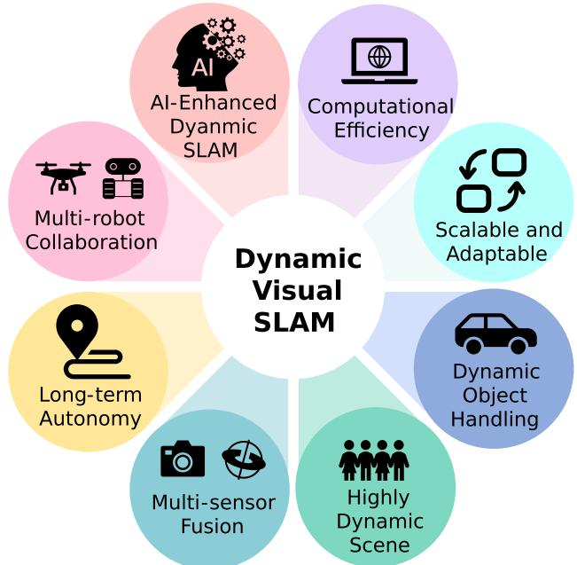

A Survey of Visual SLAM in Dynamic Environment: The Evolution From Geometric to Semantic Approaches
Yanan Wang , Yaobin Tian , Jiawei Chen , Kun Xu , Member, IEEE, and Xilun Ding
Abstract— Simultaneous localization and mapping (SLAM) is crucial for the progression of autonomous systems, including autonomous driving, augmented reality (AR), and robotics. Traditionally reliant on static environments, SLAM now confronts the complexities of the dynamic real world. Advancements in artificial intelligence (AI) and deep learning are propelling SLAM toward the enhanced management of these dynamics. This survey presents a comprehensive analysis of visual SLAM in dynamic settings, an area significantly advanced by semantic understanding and sensor fusion technologies. It begins with an examination of geometric SLAM methods, addressing their efficacy in static contexts and limitations amidst dynamic changes. Subsequently, it focuses on semantic-based SLAM techniques, emphasizing their capacity for nuanced environmental representation and dynamic object management. In addition, the survey explores cutting-edge multisensor fusion strategies that substantially improve SLAM’s robustness and precision in intricate environments. We offer a critical review of persistent challenges, including computational demands, sensor calibration, and the imperative for real-time processing. The survey concludes by identifying fertile areas for future research, highlighting the ongoing potential for SLAM technology innovation to adapt to the ever-changing environmental dynamics.
Index Terms— Dynamic environment, review, semantic simultaneous localization and mapping (SLAM), visual SLAM.
I. INTRODUCTION
ISUAL simultaneous localization and mapping (SLAM) remains a pivotal technology in robotics and computer vision, laying the foundation for autonomous navigation in varied environments. It’s applications span across autonomous driving, augmented reality (AR), virtual reality (VR), robotic automation, smart agriculture, and more. Traditional visual SLAM methodologies, exemplified by the ORB-SLAM family [1], [2], [3] and VINS-Mono [4], excel in static settings but encounter significant challenges in dynamic and unpredictable environments. This survey delves into the transformative journey of SLAM from geometric-based approaches to advanced semantic-based and multisensor fusion techniques, highlighting their critical role in navigating dynamic settings.
Fig. 1 shows a conceptual diagram linking dynamic visual SLAM with fields such as computer vision and deep learning and showcases its diverse applications. The dynamic nature of real-world environments, with their inherent unpredictability and moving elements, necessitates an evolution in SLAM techniques. This evolution has led to the integration of semantic understanding with geometric data, a synergy that enhances environmental perception and interaction.
Semantic visual SLAM, marrying deep learning with geometric principles, represents a significant leap in SLAM technology. This approach allows systems to recognize and adapt to moving objects and environmental changes, offering a comprehensive understanding of dynamic scenes. While the fusion of geometric and semantic data promises enhanced accuracy and situational awareness, it also introduces complexities in real-time processing, data fusion accuracy, and artificial intelligence (AI) algorithm resilience.
Recent progress in visual SLAM, as highlighted by DS-SLAM [5], DynaSLAM [6], and Dynam-SLAM [7], demonstrates a shift toward using visual data not only just for mapping and localization but also for dynamic environment interaction. Fig. 2 chronicles the timeline of key developments in dynamic visual SLAM.
This review builds upon these groundbreaking works, offering an updated synthesis of the latest research trends, methodologies, and challenges in dynamic visual SLAM. We critically analyze the current limitations and the necessity for ongoing innovation, comparing our survey with the existing literature to highlight its unique focus on the convergence of geometric and semantic paradigms in visual SLAM.
Previous surveys, such as Cadena et al. [8], Saputra et al. [9], Chen et al. [10], Xu et al. [11], Taheri and Xia [12], and Tourani et al. [13], have provided valuable insights into various aspects of SLAM. Table I offers a comparative overview of these surveys, illustrating the unique focus of each. Our review distinguishes itself by holistically examining the intersection of geometric and semantic approaches in SLAM, addressing a critical need for comprehensive analyses in this area.
In conclusion, our review contributes to the ongoing dialog in visual SLAM research, offering a critical examination of current advancements and charting a course for future developments in dynamic environments. We aim to inspire new research that pushes the boundaries of SLAM technology, driving it toward greater adaptability, accuracy, and robustness.

Fig. 1. Innermost layer illustrates the relationship between the dynamic visual SLAM and fields, such as computer vision, deep learning, and visual SLAM. The next outer layer represents the classification of dynamic visual SLAM, while the outermost layer showcases the application scenarios of dynamic visual SLAM.

Fig. 2. Timeline of some noteworthy dynamic visual SLAM methods.
TABLE I
RECENT NOTICEABLE VISUAL SLAM SURVEYS
| Reference | Year | Focus Area |
| Cadena et al. [8] | 2016 | Open challenges and new research issues of SLAM |
| Saputra et al. [9] | 2019 | Visual SLAM and Structure from Motion (SfM) in Dynamic environments |
| Chen et al. [10] | 2020 | Deep learning in for localization and mapping |
| Xu et al. [11] | 2021 | Low-level and high level feature Choices in dynamic SLAM |
| Taheri et al. [12] | 2021 | Development and current trends of SLAM |
| Tourani et al. [13] | 2022 | State-of-the-art of visual SLAM |
This article unfolds as follows. Section II delves into the challenges and foundational concepts of visual SLAM in dynamic environments, providing the groundwork for understanding the subsequent methodologies. Sections III–VII explore various approaches to SLAM in dynamic settings, including purely geometric methods, semantic-based SLAM techniques, and the integration of multisensor fusion for enhanced localization and mapping. Each section not only reviews the state-of-the-art but also critically evaluates the advantages and limitations of these approaches. In Section VIII, we engage in a discussion on the dynamic visual SLAM, drawing connections between theory and practical applications. This article culminates in Section XI with a conclusion that reflects on the insights gained and proposes directions for future research, aiming to further push the envelope in the field of dynamic visual SLAM. Fig. 3 visually outlines the structure of this survey.

Fig. 3. Mind map of the survey’s structure. This diagram provides a visual overview of the paper’s organization, highlighting the progression from foundational challenges in dynamic visual SLAM through various methodological approaches, to the concluding reflections on the future research directions.
II. CHALLENGES AND FOUNDATIONS OF VISUAL SLAM IN DYNAMIC ENVIRONMENTS
A. Impact of Dynamic Environments on SLAM Systems
The introduction of dynamic objects in environments presents distinct challenges to the field of visual SLAM, diverging significantly from the static world assumption that underlies many traditional SLAM algorithms. The presence of dynamic elements, primarily moving objects, necessitates a re-evaluation of conventional approaches and prompts the development of novel methodologies to maintain SLAM system efficacy.
1) Challenges Posed by Moving Objects: The primary complication in dynamic environments arises from moving objects. Traditional SLAM systems are predicated on the assumption of a static world, where environmental changes are attributed solely to the observer’s movement. This fundamental assumption is invalidated in dynamic settings, where objects within the environment exhibit independent motion. Dynamic objects disrupt the process of feature association and tracking, which are critical to the operation of many SLAM systems. The reliability of feature tracking is compromised when the features, attached to moving objects, change position, disappear, or become occluded. Consequently, this leads to incorrect feature matching and, by extension, erroneous pose estimations.
2) Impact on Map Consistency and Accuracy: Continuously updating the map to reflect the transient nature of dynamic objects is a formidable challenge. Ensuring map consistency while accommodating the nonstatic elements requires sophisticated mechanisms to differentiate between permanent and transient environmental changes. The accuracy of the map is directly impacted by the presence of dynamic objects. Transient features associated with these objects can lead to the creation of inaccurate or ephemeral map elements, thus diminishing the map’s utility for navigation and further environmental understanding.
3) Computational Demands and Real-Time Processing: Addressing the dynamics of an environment significantly increases computational demands. The necessity for constant map updates and real-time response to movement requires robust and computationally efficient algorithms.
4) Enhancing Robustness and Adaptability: The dynamic nature of these environments demands heightened robustness and adaptability from SLAM systems. Distinguishing between static and dynamic scene components and adapting the mapping and localization processes accordingly is essential for reliable operation.
In conclusion, the presence of dynamic objects in environments fundamentally challenges traditional SLAM systems, calling for advanced solutions that address the issues of mapping consistency, feature tracking reliability, computational constraints, and system robustness. Section III will explore geometrically constrained SLAM methods, and their adaptations to overcome these challenges in dynamic scenarios.
B. Epipolar Geometry Constraints
In the realm of dynamic environments, geometric constraints play a pivotal role in addressing the challenges posed by moving objects. These methods typically leverage principles, such as epipolar geometry and multiview geometry [14] to discern dynamic features within a scene, which are essential for maintaining the accuracy and reliability of SLAM systems.
Let us first delve into the methodology of assessing dynamic points through epipolar geometry constraints. Consider two image frames, denoted by and , with corresponding camera centers represented as and . Let be a feature point in , correctly matched to another feature point in In the event of a correct match, the lines and intersect at a spatial point P, and the intersection of the line with the camera plane yields the epipolar lines and . According to the epipolar geometry constraint, it holds that
Here, F denotes the fundamental matrix.
However, dynamic points deviate from this constraint. Let the true corresponding point be denoted by Dynamic points are discerned by assessing whether the distance from the matching point to the epipolar line exceeds a predefined threshold , where
The use of epipolar geometry in dynamic environments facilitates the exclusion of features associated with moving objects from the pose estimation process. This is achieved by identifying features whose movement does not align with the epipolar constraint dictated by the camera’s motion, thus isolating dynamic elements from the scene reconstruction.
C. Multiview Geometry Constraints
Furthermore, multiview geometry constraints are commonly employed for discerning dynamic objects. For a feature point u in the image, it is projected onto the closest n keyframes to further assess its dynamic nature. Subsequently, it is backprojected into a 3-D point based on its corresponding depth z using the following equation:

Fig. 4. Illustration of (a) epipolar geometry constraint and (b) multiview geometry constraint.
The projection of P onto the ith neighboring frame yields
Based on and its corresponding depth in the depth image, it is further back-projected into a 3-D point using the following equation:
If a feature point remains static, the distance between P and ought to be small. Points exceeding the threshold are categorized as dynamic. Fig. 4 illustrates thr epipolar and multiview geometry constraints.
Multiview geometry provides a framework for understanding the scene structure through multiple observations. In dynamic SLAM, multiview constraints assist in differentiating between static and dynamic features by examining their consistency across several viewpoints.
III. PURELY GEOMETRIC-BASED SLAM APPROACHESIN DYNAMIC SCENES
Some researchers employ purely geometric approaches to SLAM problems in dynamic environments. These techniques concentrate mainly on using spatial and temporal geometry to handle the challenges posed by moving objects in dynamic settings. Unlike semantic understanding, these methods use geometric constraints to distinguish between static and dynamic features.
A. Literature Review
Alcantarilla et al. [15] employed dense scene flow to detect and remove dynamic objects to minimize their impact on visual SLAM. While CoSLAM [16] identified dynamic map points by analyzing their triangulation consistency. Kim and Kim [17] proposed a dynamic scene visual odometry method that utilizes a background model. This method estimates a nonparametric background model from the depth scene to extract the static portion of the scene. Subsequently, it employs an energy-based visual odometry approach to estimate the camera’s motion. Li and Lee [18] adopted a static weighting approach to mitigate the influence of dynamic objects on pose estimation. Static weighting signifies the likelihood of each feature being static in each keyframe. This information is incorporated into the intensity-assisted iterative closest point to estimate camera poses. Sun et al. [19] introduced an online motion object removal method based on RGB-D information to address RGB-D SLAM in dynamic scenarios. They proposed an incrementally updatable foreground model using optical flow to identify dynamic foreground objects. The team later extended this work to monocular dynamic scene SLAM [20], eliminating the need for depth information by identifying and removing dynamic features using optical flow.
StaticFusion [21] is capable of simultaneously detecting dynamic objects and estimating camera motion while performing dense reconstruction of the static scene. The authors first cluster the depth map and then calculate the dynamic probability for each cluster based on the camera’s motion. This probability is integrated into camera pose estimation and dynamic–static scene segmentation. Dai et al. [22] represented map points as a graph structure, where nodes correspond to map points, and edges represent correlations between map points. By leveraging the correlations between map points, they separate points belonging to the static scene from those associated with different moving objects. Similarly, Du et al. [23] adopted a graph-based approach to address SLAM in dynamic scenes. They incorporated long-term consistency based on conditional random fields (CRFs) to effectively detect and track dynamic objects using long-term observations from multiple frames. Refusion [24] utilized residuals obtained from the registration, along with an explicit representation of free space in the environment, to detect dynamic objects. DynaVINS [25] introduced a novel bundle adjustment (BA) method, which leverages inertial measurement unit (IMU) preintegrated pose priors to eliminate features associated with dynamic objects. They also propose keyframe grouping and multihypothesis constraint grouping techniques to reduce the impact of temporary dynamic objects on loop closure detection. DymSLAM [26] can segment moving objects through geometric multimotion segmentation, simultaneously estimating the pose of the camera and the motion object, and dense point cloud reconstruction for static scenes. PFD-SLAM [27] combines optical flow with grid-based motion statistics for inter-frame pose estimation. It then integrates depth imagery with particle filtering for dynamic object segmentation.
In addition to point features, line, and planar features find applications in geometric-based dynamic visual SLAM methods.
Zhang et al. [28] proposed DynPL-SVO, a stereo visual SLAM method using both point and line features. It employed motion models and dynamic grids to detect outliers and reduced the impact of dynamic objects by removing features within dynamic grids. Canovas et al. [29], combining camera motion and depth information, employed dense optical flow to distinguish between dynamic and static objects. They subsequently reconstructed the static parts of the environment based on planar regions. RP-VIO [30], a monocular visual-inertial odometry system, leveraged the presence of planar structures in the scene. Since most planar features in the scene are static, this method exclusively utilized planar features in both front-end and back-end optimization, aiming to enhance accuracy in dynamic scenes. Fan et al. [31] proposed a dynamic scene SLAM approach that uses planar features. This method employed a deep learning network to detect static planar features and incorporates planar homography constraints into the reprojection error to accelerate optimization.
TABLE II
SUMMARY OF REPRESENTATIVE WORKS OF PURELY GEOMETRY-BASED DYNAMIC SLAM
| Reference | Year | Sensor Type | Feature Type | Dynamic Feature Judgment Method | Applicable Scenarios |
| Kim et al. [17] | 2016 | RGB-D | Point | Background model estimation | Indoor |
| Li et al. [18] | 2017 | RGB-D | Point | Static weighting in keyframes | Indoor |
| StaticFusion [21] | 2018 | RGB-D | Point | Clustering and dynamic probability calculation | Indoor |
| Sun et al. [19] | 2018 | RGB-D | Point | Incremental foreground model using optical flow | Indoor |
| Canovas et al. [29] | 2020 | RGB-D | Point | Dense optical flow and planar region reconstruction | Indoor |
| RP-VIO [30] | 2021 | Monocular + IMU | Plane | Planar feature utilization | Outdoor/Indoor |
| Dai et al. [22] | 2022 | RGB-D | Point | Graph structure representation of map points | Indoor |
| DynPL-SVO [28] | 2022 | Stereo | Point + Line | Motion models and dynamic grids for outlier detection | Outdoor/Indoor |
| DynaVINS [25] | 2023 | Monocular + IMU | Point | Robust Bundle Adjustment | Outdoor/Indoor |
RigidFusion [32] treated all dynamic parts of a scene as a single rigid body, segmenting and tracking both static and dynamic components. This enabled simultaneous localization and reconstruction of static backgrounds and rigid dynamic parts, even in environments where dynamic objects cause significant occlusion. They subsequently proposed a method for RGB-D SLAM in indoor planar environments with multiple large dynamic objects [33]. It employed an online multimotion segmentation method and a hierarchical representation based on planes and superpixels. Dynamic planar objects were separated and tracked independently based on their distinct rigid motions. The remaining dynamic nonplanar areas were removed as outliers and excluded from the background map. Afterward, an RGB-D-inertial SLAM method [34] for indoor dynamic environments with long-term large occlusion was introduced. It combined ORB features with K-means clustering on depth maps to actively delete sparse map points generated from dynamic object areas, maintaining a static background for robust localization even under extensive occlusion conditions.
Table II lists some representative works of geometry-based dynamic SLAM and their features, including sensor type, dynamic feature judgment method, and applicable scenarios.
B. Advantages and Limitations
The above-mentioned purely geometric methods provide valuable insights into dynamic scene SLAM but come with their own set of advantages and limitations.
1) Advantages:
1) Simplicity: Geometric methods offer simplicity in their formulation and implementation, making them computationally efficient.
2) Independence From Pretrained Models: Geometric approaches do not require pretrained models or extensive training data, making them more versatile and easier to deploy in varied scenarios.
3) Efficiency in Well-Defined Geometries: Geometric methods excel in structured environments where clear geometric patterns exist. This can be particularly beneficial in industrial or planned settings, where such regular patterns are common.
4) Improved Performance in Controlled Settings: In environments with controlled dynamics or minimal unpredictability, geometric methods can provide highly accurate and stable SLAM solutions.
2) Limitations:
1) Dependence on Feature Quality: The effectiveness of geometric methods heavily relies on the quality and density of features in the environment. Poor feature quality and insufficient of features can significantly degrade performance.
2) Handling High-Dynamic Environments: In environments with a significant number of moving objects, purely geometric methods can struggle due to the overwhelming number of dynamic features, which may lead to sparse data for localization and static scene reconstruction.
3) Limited Contextual Understanding: Purely geometric methods lack the contextual understanding that semantic approaches provide. This limitation can lead to difficulties in scenarios, where geometric cues alone are insufficient to distinguish between static and dynamic elements accurately.
4) Dependence on Initial Conditions: The accuracy of geometric SLAM can be highly dependent on initial conditions and may degrade over time, especially in long-term deployments or large-scale environments.
In light of the advantages and limitations of purely geometric SLAM methods, their applications are best suited to environments with well-defined geometries and controlled dynamics, where the simplicity and computational efficiency of these methods can be fully leveraged. Here is a breakdown of the key application scenarios.
1) Industrial Facilities and Warehouses: The structured environment and repetitive patterns common in these settings facilitate efficient feature detection and tracking, making geometric SLAM ideal for navigation and automation tasks within such spaces. A notable implementation is observed in RigidFusion [32], where a geometric SLAM system was deployed for an omnidirectional robot in a large warehouse with moving boxes.
2) Controlled Indoor Spaces: Locations such as offices, museums, and libraries, where changes in the environment are minimal and predictability is high, benefit from the simplicity and efficiency of geometric SLAM for accurate mapping and localization. An application is demonstrated by DynaVINS [25], where geometric SLAM facilitated the development of an indoor navigation.
3) Robotic Platforms With Limited Processing Power: Small robots, including drones and robotic vacuum cleaners, that operate in relatively stable environments can utilize geometric SLAM to navigate effectively without the need for extensive computational resources. The study by DymSLAM [26] illustrates how low-power mobile platform perform geometric dynamic SLAM in cluttered indoor environments.
These application scenarios highlight the strengths of purely geometric SLAM approaches in environments, where the dynamics are limited or predictable, and the geometry can be clearly defined and leveraged for precise localization and mapping.
In essence, purely geometric approaches in dynamic SLAM offer valuable strategies for dealing with dynamic objects through spatial and temporal analysis. However, their limitations in handling highly dynamic environments and lack of semantic understanding necessitate the exploration of hybrid methods that combine geometric reasoning with semantic insights. Section IV will delve into semantic-based visual SLAM methods, highlighting their role in enhancing SLAM performance in dynamic scenes.
IV. SEMANTIC-BASED VISUAL SLAM METHODS IN DYNAMIC SCENES
Semantic-based SLAM benefits from deep learning techniques such as object detection, semantic segmentation, and instance segmentation (Fig. 5) to acquire semantic information, thus aiding in localization and mapping tasks. Fig. 5 shows these methods on an image of the TUM RGB-D dataset [35]. YOLO [36], SegNet [37], mask R-CNN [38], and other deep learning methods are commonly used in visual SLAM. In static scenes, visual semantic SLAM approaches such as SLAM++ [39], QuadricSLAM [40], Semantic-Fusion [41], and Kimera [42] have exhibited promising outcomes. In dynamic scenes, semantic information can also offer valuable prior knowledge for SLAM.
Semantic-based SLAM methods in dynamic environments leverage semantic information to enhance both localization and mapping processes and often integrate multisensor fusion for improved performance. These methods can be broadly categorized into two key areas: utilizing semantics for localization in dynamic scenes and for map building. In addition, the integration of multisensor fusion represents a significant advancement in this domain. In the context of utilizing semantic information for localization in dynamic scenes, the approach can further be divided into the exclusion of dynamic features and the tracking of dynamic features/objects. In Sections V and VI, we will discuss these aspects separately.

(a)

(b)

(c)

(d)
Fig. 5. Schematic of semantic information acquisition on an image in the TUM RGB-D dataset [35]. (a) Original image. (b) Object detection. (c) Semantic segmentation. (d) Instance segmentation. In this figure, instance segmentation identifies the object as a TV due to the dataset’s classification criteria, though it visually resembles what might commonly be referred to as a monitor.
Fig. 6 illustrates a typical pipeline for dynamic visual SLAM. Initially, the system ingests inputs, such as RGB images, depth images, and IMU data. Subsequently, the process involves feature extraction, image matching, and tracking. Concurrently, operations like object detection or semantic segmentation are performed to acquire semantic information. This semantic data, coupled with geometric constraints, aids in identifying dynamic objects. Features associated with these dynamic entities are either excluded or tracked specifically. Afterward, a static scene map is constructed. In addition, some approaches also develop a semantic map incorporating object labels.
V. SEMANTIC-BASED DYNAMIC SLAM I: DYNAMIC OBJECT EXCLUSION
In the realm of semantic-based visual SLAM, a significant focus has been placed on the enhancement of localization accuracy in dynamic environments. One prevalent approach is the exclusion of dynamic objects from the localization process. This section provides an overview of this approach, examining its challenges and a review of related literature, followed by an in-depth analysis of its advantages and limitations.
The core concept of excluding dynamic objects for localization hinges on the identification and removal of transient features associated with moving elements in the scene. This approach aims to mitigate the impact of dynamic objects on the accuracy of the SLAM system. The primary challenges in this domain include accurately detecting and segmenting dynamic objects in real-time and efficiently differentiating them from the static background. The rapidly evolving landscape of deep learning has propelled research in this area, focusing on leveraging semantic information to enhance the robustness of localization in the presence of dynamic entities.

Fig. 6. Typical pipeline of dynamic visual SLAM. First, the system takes RGB images, depth images, and data from sensors like IMU as input. It then combines semantic information with geometric constraints to determine dynamic objects. Subsequently, features belonging to dynamic objects are either excluded or tracked, leading to the output of the camera’s pose and the construction of a static environmental map.
A. Literature Review
An et al. [43] introduced a method using semantic segmentation to detect moving vehicles in autonomous driving scenarios, treating them as outliers for exclusion. Building upon this, DS-SLAM [5], an enhancement of ORB-SLAM2 [2], incorporated a semantic segmentation thread using SegNet [37]. This system processed each frame for semantic segmentation, identifying potential dynamic points for exclusion, notably improving localization accuracy by removing features in areas labeled as “people.” SaD-SLAM [44] employed offline mask R-CNN [38] to create semantic masks for each image. Unlike DS-SLAM, SaD-SLAM classified features into four categories and treated them differently to enhance precision in dynamic scenes. Similarly, DynaSLAM [6] used mask R-CNN for initial semantic segmentation, followed by a cost-effective feature tracking approach and multiview geometry to detect dynamic objects missed in segmentation.
In addition, Singh et al. [45] merged semantic information with a probabilistic framework to extract and robustly remove moving objects, preserving features crucial for pose estimation and mapping. SOF-SLAM [46] based on ORB-SLAM2’s RGB-D mode introduced a semantic optical flow method for dynamic feature detection, tightly coupled with SegNet [37] generated semantic masks for reliable fundamental matrices. Hu et al. [47] proposed a dynamic scene SLAM also based on ORB-SLAM3. This method added semantic segmentation and geometric threads, utilizing semantic and multiview geometric information to differentiate between static and dynamic objects, employing ant colony algorithms to find all dynamic point groups. DyStSLAM [48] integrated disparity image and instance segmentation to estimate motion confidence, and used a confidence-based matching algorithm to estimate the pose of moving objects while using static objects to estimate the camera’s pose. SOLO-SLAM [49] introduced a filtering method based on geometric constraints and regional dynamic ranking, dividing areas by their degree of dynamism and applying different filtering strategies accordingly. DGS-SLAM [50] introduced a dynamic object detection module using polynomial residuals and semantic frames for object segmentation.
Blitz-SLAM [31] combined BlitzNet [51] with depth images to obtain object masks, dividing images into static and potential dynamic areas. The system builds epipolar constraints using matching points in static areas to eliminate outliers in potential dynamic regions. Cheng et al. [20] used object detection and likelihood calculation to improve visual localization accuracy in dynamic environments, excluding dynamic areas to preserve static regions based on a Bayesian framework. PSPNet-SLAM [52] is a system based on ORB-SLAM2 [2], which uses PSPNet [53] to segment dynamic objects and incorporates contextual information. The geometric thread in PSPNet-SLAM then uses an error compensation homography matrix to improve the accuracy of dynamic feature detection. Dynamic-DSO [54] was developed based on DSO [55] algorithm, and combined semantic information of mask R-CNN to detect and eliminate dynamic objects in dynamic scenes. Xie et al. [56] employed the mask inpainting to address the issue of insufficient semantic segmentation. Subsequently, they integrated optical flow motion estimation to identify and remove dynamic objects and subsequently remove them. WF-SLAM [57] combines semantic segmentation with epipolar geometry constraints to detect dynamic objects. It assigns different weights to feature points based on semantic information to mitigate the influence of dynamic objects.
In dynamic SLAM, researchers have increasingly utilized point, line, and plane features to enhance system performance. PLD-SLAM [58] combines point and line features in RGB-D scenarios to achieve dynamic scene SLAM, utilizing MobileNet [59] with K-means clustering for object identification, epipolar geometry, and depth consistency checks for feature point discernment. Similarly, YPD-SLAM [60] employs object detection and epipolar geometry constraints to detect dynamic objects, using plane features and coplanar constraints to boost robustness in low-texture environments. DRG-SLAM [61] applies point, line, and plane features in dynamic scene SLAM to enhance feature tracking robustness postdynamic feature exclusion. It can construct static structural maps containing 3-D point clouds, lines, and planes. The feature extraction and dynamic feature culling are shown in Fig 7. PLDS-SLAM [62] differentiated between static and dynamic objects by applying geometric constraints for line feature matching and epipolar geometry for point features. It employed semantic segmentation as a prior for dynamic objects and Bayesian theory to eliminate dynamic points.

Fig. 7. Screenshot of DRG-SLAM [61] on Bonn RGB-D dataset [24]. As demonstrated in this figure, by combining semantic segmentation with geometric constraints, the method effectively removes dynamic features from the person.
To reduce computational complexity, some algorithms perform semantic segmentation only on specific keyframes. Ji et al. [63] removed known dynamic objects from semantic segmentation on keyframes and used K-means clustering on depth maps to classify features as dynamic. They measured reprojection errors and set a threshold for classification. DM-SLAM [64] introduced a distribution and local-based random sample consensus (RANSAC) algorithm, partitioning the image into a grid, reconstructing motion models locally, and combining these models to cluster feature points across the entire image. RDS-SLAM [65], built upon ORB-SLAM3 [3], added semantic segmentation and optimization threads. It employed a semantic keyframe selection strategy, enabling the tracking thread to operate without waiting for the segmentation thread. Bayesian filtering is used to calculate and update the dynamic probability of map points, excluding them if the probability exceeds a certain threshold. Building on this, RDMO-SLAM [66] predicted semantic labels using dense optical flow based on convolutional neural networks, thereby obtaining semantic labels for most keyframes and using optical flow to calculate the speed of landmarks for dynamic probability assessment.
Addressing the computational demands of deep learning for semantic segmentation, some researchers have proposed lightweight dynamic semantic SLAM solutions. DRE-SLAM [67], Crowd-SLAM [68], YOLO-SLAM [69], CFP-SLAM [70], Song et al. [71], Zang et al. [72], DO-SLAM [73], OVD-SLAM [74], and MVS-SLAM [75] all applied YOLO [36] for object detection to get semantic prior. DRE-SLAM [67] employs YOLOv3 [76] for object detection, supplemented by K-means clustering [77] for dynamic feature detection. By excluding entire clusters of dynamic points, it achieves robust localization in highly dynamic scenes and can construct static octree maps in real time on CPUs. Crowd-SLAM [68] tackled SLAM problems in crowded environments using YOLOv3 Tiny, which trained on a dataset of people in crowded environments, to improve the efficiency and accuracy of dynamic object detection. YOLO-SLAM [69] designed a lightweight YOLOv3 [76] network to accelerate object detection. Subsequently, they combined depth information with RANSAC to filter out dynamic objects. CFP-SLAM [70] used YOLOv5 for object detection, categorizing objects into high and low dynamics based on their motion characteristics. It then calculated the static probability of feature points using projection constraints and epipolar geometry. Song et al. [71] employed YOLOv3 [76] for object semantic information detection, followed by the construction of a semantic table. They then utilized a table retrieval method for SLAM data association and loop detection. Zang et al. [72] applied YOLOv5 with an attention mechanism to detect dynamic objects, choosing feature points based on the quantity and screen proportion of these dynamic objects, and then identifying dynamic regions using a geometric method based on optical flow and RANSAC. DO-SLAM [73] built on ORB SLAM2 [2] and combine YOLOv5 with an outlier detection mechanism to identify and eliminate feature points on dynamic objects. OVD-SLAM [74] integrated YOLOv5, optical flow, and depth information to distinguish foreground and back ground regions in images, considering the foreground areas as dynamic regions. MVS-SLAM [75], based on ORB-SLAM3 [3], applied YOLOv7 [78] for object detection, and then combined this semantic prior information for self-motion estimation to detect and eliminate dynamic features.
B. Advantages and Limitations
These studies collectively contribute to the evolving landscape of SLAM, demonstrating significant strides in enhancing accuracy and robustness in dynamic environments. By intelligently integrating semantic segmentation with feature tracking and exclusion methodologies, these approaches represent a substantial advancement in the SLAM technology, paving the way for more reliable and efficient autonomous navigation systems. We provide a detailed summary of the advantages and limitations of these methods.
1) Advantages:
1) Increased Localization Accuracy: By excluding features associated with moving objects, the SLAM system reduces errors in localization that are caused by these dynamic elements. This leads to more precise and stable pose estimation.
2) Robustness to Environmental Variability: These approaches enhance the system’s robustness to environmental changes. By focusing on static elements, the SLAM system becomes less susceptible to disruptions caused by moving objects, which is crucial in highly dynamic settings.
3) Improved Map Consistency: Excluding dynamic features contributes to the consistency and reliability of the generated map. This is particularly beneficial in long-term SLAM applications, where maintaining an accurate representation of the environment over time is critical.
4) Reduced Risk of False Positives: By filtering out dynamic objects with semantic information, the system minimizes the likelihood of false positive feature associations, which can be a common issue in traditional SLAM systems operating in dynamic environments.
5) Facilitation of Subsequent Processing Steps: Exclusion of dynamic features simplifies subsequent processes, such as loop closure and map optimization, as these processes can operate under the assumption that the remaining features are static.
6) Ease of Integrating With Prebuilt Maps: Excluding dynamic features makes it easier to integrate real-time SLAM data with prebuilt static maps, as there is a reduced risk of discrepancies between the real-time data and the pre-existing map information.
2) Limitations:
1) Potential Loss of Important Features: The exclusion process can potentially remove important features that, although associated with dynamic objects, could be beneficial for localization in certain scenarios.
2) Potential for Delayed Response to Environmental Changes: There can be a lag in the system’s response to changes in the environment, especially if previously static objects become dynamic (e.g., a parked vehicle starting to move).
3) Computational Complexity and Overhead: Implementing real-time semantic segmentation and dynamic object exclusion adds significant computational load to the SLAM system, which can be a limiting factor in terms of processing speed and resource utilization.
4) Dependency on Accurate Semantic Segmentation: The effectiveness of this approach heavily relies on the accuracy of semantic segmentation. Misclassification of features can lead to incorrect exclusions, adversely affecting localization.
5) Challenges in Environments With High Dynamic Activity: In scenarios where a large portion of the scene is dynamic, such as crowded urban areas, the exclusion of dynamic objects might result in insufficient features for accurate localization.
6) Difficulty in Handling Semidynamic Objects: Objects that exhibit both static and dynamic characteristics (e.g., parked vehicles that may move at any time) present a unique challenge, as their classification is not straightforward.
Dynamic object exclusion methods of dynamic SLAM are tailored for scenarios, where distinguishing between moving and stationary elements is critical for navigation and mapping accuracy. Here is a breakdown of their optimal application areas.
1) Autonomous Vehicles in Controlled Environments: Improves safety in controlled urban areas or campus settings by semantically distinguishing and excluding dynamic elements like pedestrians and other vehicles from the SLAM process, facilitating safer navigation. DynamSLAM [7] explores this application within university campus settings, showcasing enhanced vehicle safety through semantic exclusion techniques.
2) Smart Home and Assistive Robotics: Enables robots to perform tasks and provide assistance in home environments by dynamically adjusting to the presence and movement of household members. A study by Yang et al. [67] highlights the implementation of dynamic object exclusion in indoor environments to improve the functionality of assistive robots.
3) Robotic Navigation in Mixed-Use Spaces: Offers robust operational capabilities for robots in environments that combine static structures with dynamic human activity, such as retail spaces, hospitals, and entertainment venues, enabling consistent navigation and efficient interaction. Crowd-SLAM [68] details the deployment of dynamic SLAM in a crowded environment, emphasizing consistent localization.
These application scenarios underscore the importance of dynamic object exclusion in environments where the ability to accurately recognize and navigate around moving entities significantly enhances the efficiency, safety, and reliability of autonomous systems.
In summary, the approach of excluding dynamic objects for localization in semantic-based SLAM systems presents a trade-off between enhanced accuracy and robustness, and the challenges of computational complexity and reliance on accurate semantic segmentation. Section VI will explore the alternative approach of tracking dynamic objects, which seeks to address some of these limitations while leveraging the motion information of dynamic entities within the SLAM process.
VI. SEMANTIC-BASED DYNAMIC SLAM II: DYNAMIC OBJECT TRACKING
In the quest for more advanced SLAM systems, the tracking of dynamic objects has emerged as a pivotal area of study within semantic-based visual SLAM. This approach focuses on accurately identifying, monitoring, and predicting the movement of dynamic objects within a scene, integrating this information to enhance the localization process.
The essence of this method lies in its ability to adapt the localization process in response to changes within the environment. The primary challenge is the real-time identification and tracking of dynamic entities, which requires sophisticated algorithms capable of handling complex and unpredictable motion patterns. Another significant challenge is differentiating between static background and moving objects in various environmental conditions.
A. Literature Review
In dynamic SLAM research, many works have traditionally treated dynamic objects in the scene as outliers for direct exclusion. However, there is a growing trend in recent studies to track dynamic objects within scenes and estimate their motion characteristics.
DynaSLAM II [79], an extension of DynaSLAM [6], tracked dynamic objects postsemantic segmentation. The system’s backend simultaneously optimizes the static scene structure, dynamic objects, and the trajectories of both the camera and dynamic objects. Dynamic SLAM [80] employed the semantic segmentation to estimate object motion in a scene without pre-existing 3-D models or object poses. This algorithm generated dynamic and static maps, extracting rigid object velocities in the scene. DOT-SLAM [81], a multiobject tracking (MOT) SLAM system, utilized instance segmentation with mask R-CNN to identify moving objects, minimizing photometric reprojection errors to track them. PointSLOT [82] identified static and dynamic objects by calculating object motion probability and estimating camera pose. It also tracked dynamic objects using object-based BA centered around camera pose parameterization.
DE-SLAM [83] combined dynamic object detection and tracking with loop closure detection, using a lightweight object detection network for keyframes and adaptive particle filtering with particle clustering for nonkeyframes. SLAMANTIC [84] combined semantic information with observation consistency to calculate dynamic confidence, validated low-confidence points with high-confidence points, and selected final map points for pose estimation and mapping. MOTSLAM [85] first performed MOT and 2-D/3-D bounding box detections to create initial 3-D objects. It then uses neural network-based depth estimation to obtain depths for dynamic features. Finally, it uses BA to optimize camera and object poses and map points. Zhang et al. [86] utilized semantic instance segmentation to divide the scene into static backgrounds and multiple dynamic objects. They combined optical flow with tracking of these dynamic objects, jointly optimizing the motion of objects and the camera with the optical flow in a unified formulation.
Vincent et al. [87] involved semantic segmentation of object instances in images, followed by using extended Kalman filters to identify, track, and remove dynamic objects in the scene. Liu et al. [88] proposed a switching-coupled backend solution that flexibly couple dynamic and static elements, thereby enhancing system performance by effectively utilizing “good” dynamic objects while mitigating the impact of “bad” ones. Yang et al. [89] categorized objects into five types based on motion characteristics from semantic segmentation, assigning weights to improve interframe estimation for dynamic objects. VDO-SLAM [90] applied semantic information to estimate rigid object motion without prior shape or motion model knowledge. It integrated environment structures into unified estimation frameworks for accurate robot pose and map estimation. Nair et al. [91] proposed a multipose-graph optimization framework for dynamic objects using single-view metrology, deep learning, and category-level shape estimation. This framework addresses the scale ambiguity issue in monocular SLAM for localization and MOT. Liu et al. [92] proposed a novel switching-coupled backend solution for dynamic object tracking, which combines camera and landmark states to reduce the impact of dynamic objects and improve system performance. TwistSLAM [93] clusters static and dynamic points based on semantic categories. Then, it introduced twists, inspired by mechanical joints, to describe dynamic clusters relationships. By estimating these twists, certain degrees of freedom of dynamic objects were constrained, allowing for effective tracking of dynamic objects.
ClusterVO [94] used multilevel probabilistic association and heterogeneous CRF to combine semantic, spatial, and motion information for clustering inference, and simultaneously estimated the pose of cameras and the poses of moving objects. Qiu et al. [95] combined monocular and IMU, by YOLO for object detection, tracking the dynamic objects, and estimating the 6-D pose of dynamic objects, and restoring the scale of the objects. Liu et al. [96] proposed a method for SLAM based on the Manhattan world hypothesis, which combines point features and line features. The struck [97] algorithm was used to track objects in a man-made dynamic environment to eliminate obstacles and achieve SLAM. OTE-SLAM [98] employed YOLOv5 for object detection, followed by the utilization of ByteTrack [99] for tracking dynamic objects while simultaneously estimating the pose of the camera and the objects.
B. Advantages and Limitations
1) Advantages:
1) Comprehensive Environmental Understanding: Tracking dynamic objects provides a more complete understanding of the environment. By recognizing and accounting for moving entities, the SLAM system can adapt its localization strategy based on a richer representation of the scene.
2) Enhanced Robustness in Highly Dynamic Settings: In environments with a high degree of dynamism, such as urban traffic scenarios, tracking moving objects can significantly improve localization robustness by continuously updating the system’s understanding of the scene.
3) Utilization of Dynamic Objects as Landmarks: Under certain conditions, dynamic objects, once tracked, can serve as temporary landmarks. For instance, a temporarily stationary vehicle can be a useful feature in the absence of other stable landmarks.
4) Predictive Capabilities: Tracking enables the SLAM system to anticipate future positions of dynamic objects, which can be particularly useful for path planning and obstacle avoidance in autonomous navigation systems.
5) Improved Interaction With the Environment: By tracking dynamic objects, SLAM systems can better interact with their surroundings. This is particularly beneficial for applications like service robots or autonomous drones that need to navigate and interact with dynamic environments.
6) Enhanced Safety in Autonomous Navigation: For autonomous vehicles, the ability to track dynamic objects can significantly enhance safety, allowing for more responsive and aware navigation decisions.
2) Limitations:
1) Computational Intensity: Detection and continuously tracking multiple dynamic objects and integrating this information into the SLAM process can be computationally intensive, posing challenges for real-time applications.
2) Complexity in Data Association: Accurately associating dynamic objects across frames can be challenging, especially in crowded scenes, where objects may occlude each other or exhibit similar appearance patterns.
3) Potential for Tracking Errors: Misidentification or loss of tracking of dynamic objects can lead to errors in the localization process, especially if these objects are relied upon as temporary landmarks.
4) Vulnerability to Rapid and Unpredictable Movements: Rapid or unpredictable movements of objects can exceed the tracking capabilities of the system, leading to inaccuracies in localization.
5) Increased Sensor Dependence: This approach may rely heavily on the quality and capabilities of the sensors used for object detection and tracking, which can be a limitation in environments, where sensor performance is degraded.
6) Difficulty in Long-Term Consistency: Maintaining long-term consistency in tracking dynamic objects overextended periods can be challenging, especially in environments with frequent changes.
Given the distinct advantages and limitations of dynamic object tracking in SLAM, this approach is particularly well-suited to applications that operate in environments with significant dynamism and require high levels of interaction with moving elements. Suitable scenarios include the following.
1) Urban Traffic Management and Autonomous Driving: The ability to track dynamic objects such as vehicles and pedestrians significantly enhances operational safety and efficiency, making it ideal for autonomous vehicles navigating complex urban environments. A pivotal study demonstrating this application is found in DynaSLAM II [79], which showcases advanced tracking capabilities in complex urban traffic scenarios.
2) Interactive Service Robots: In environments such as shopping malls, airports, or hospitals, service robots equipped with dynamic object tracking can more effectively avoid moving obstacles, interact with humans, and perform tasks, such as guiding or delivering items. ClusterVO [94] provides insight into how moving object tracking and motion estimation benefit the accuracy and safety of interactive service robots.
3) Surveillance and Security: Drones or robotic systems used for surveillance can benefit from tracking capabilities to follow moving subjects or vehicles accurately overextended periods, enhancing security measures in dynamic scenarios. This application is further explored in PointSLOT [82], highlighting the advantages of using dynamic SLAM in maintaining persistent surveillance over moving targets.
However, the application of dynamic object tracking in SLAM must take into account the computational demands and the challenges associated with data association and sensor reliability.
In conclusion, while the tracking of dynamic objects for enhanced localization offers several advantages in terms of environmental understanding and adaptability, it also introduces significant challenges in terms of computational demands and data association complexity. Table III presents notable examples of SLAM systems that use semantic information for localization in dynamic environments. Table III provides information on the sensor types, feature types, and methods for identifying dynamic features utilized in these SLAM systems, offering a concise overview of the current research in this field.
Section VII will delve into semantic approaches for map building in dynamic environments, exploring how semantic information can aid in creating robust and accurate environmental models amidst the challenges posed by dynamic elements.
VII. SEMANTIC-BASED DYNAMIC SLAM III: SEMANTIC MAPPING IN DYNAMIC SCENES
In the field of SLAM for dynamic scenes, in addition to using semantic information for recognizing dynamic objects and culling or tracking them to improve localization accuracy, some researchers use semantic information to construct maps containing semantic information in dynamic scenes.
These techniques, which encompass the creation of both dense semantic maps and object-level semantic representations, are pivotal in enhancing the interaction of autonomous systems with their surroundings.
A. Literature Review
In dynamic SLAM, the utilization of deep learning for semantic segmentation has become increasingly prevalent, as evidenced by systems such as EM-Fusion [100], Co-fusion [101], MID-Fusion [102], and DS-SLAM [5]. These systems employ deep learning-based semantic segmentation to identify objects within scenes, with EM-fusion and co-fusion capable of tracking and reconstructing multiple objects. Both EM-fusion [100] and MID-fusion [102] use signed distance function (SDF) voxel maps to represent scenes, with MID-fusion additionally employing octree structures for object representation, which saves memory. Co-fusion distinguishes between foreground and background in scenes, using surfels to reconstruct objects, while DS-SLAM employs octree maps for 3-D reconstruction. CubeSLAM [103] utilized object detection-derived 2-D bounding boxes and vanishing points to create high-quality cuboid frames representing detected objects. This representation, along with motion model constraints, is used to refine camera pose estimation, offering high localization accuracy in both dynamic and static scenes.
TABLE III
SUMMARY OF REPRESENTATIVE WORKS OF SLAM SYSTEMS THAT USE SEMANTIC INFORMATION FOR LOCALIZATION IN DYNAMIC ENVIRONMENTS
| Reference | Year | Sensor Type | Feature Type | Dynamic Feature Judgment Method | Applicable Scenarios | Dynamic Object Tracking |
| DS-SLAM [5] | 2018 | RGB-D | Point | Semantic segmentation + Epipolar geometry | Indoor | |
| DynaSLAM [6] | 2018 | RGB-D | Point | Static weighting in keyframes | Indoor | |
| DRE-SLAM [67] | 2019 | RGB-D + Encoder | Point | Instance segmentation + Multiview geometry | Indoor | |
| Dynamic SLAM [80] | 2020 | RGB-D | Point | Instace segmentation + Motion model | Urban/Outdoor | √ |
| G.B. Nair et al. [91] | 2020 | Monocular | Point | Semantic segmentation | Urban/Outdoor | √ |
| DynaSLAM II [79] | 2021 | Stereo/RGB-D | Plane | Instance segmentation + Multiview geometry | Urban/Outdoor | √ |
| TwistSLAM [93] | 2022 | Stereo | Point | Object detection + Multiview geometry | Urban/Outdoor | √ |
| DRG-SLAM [61] | 2022 | RGB-D | Point + Line + Plane | Semantic segmentation + Epipolar geometry + Multiview geometry | Indoor | |
| MOTSLAM [85] | 2022 | RGB-D | Point | Object detectation + Semantic segmentation | Indoor | 1 |
| PLDS-SLAM [62] | 2023 | Monocular + IMU | Point + Line | Instance segmentation + Epipolor geometry | Urban/Outdoor |
Gomez et al. [104] proposed a low-dynamic scene mapping method based on an object’s pose graph, which represents the observation number of an object and the likelihood of it being dynamic or static by means of a probability that varies over time.
DetectFusion [105] combines 2-D object detection and 3-D geometric segmentation for real-time semantic instance segmentation. It also proposes a method for detecting and segmenting motion in semantically unknown objects, improving camera tracking and map reconstruction accuracy. MaskFusion [106] is a real-time RGB-D SLAM system that identifies, segments, and labels objects in a scene, tracking and reconstructing them dynamically with semantics. It uses surfels for environmental modeling, similar to [107] and ElasticFusion [108], integrating object geometry into an object-aware map over time via object labels. TSDF++ [109] proposes a truncated SDF (TSDF) formulation capable of encoding multiple object surfaces, enabling the tracking and scene reconstruction of multiple dynamic objects, even if they are temporarily occluded by other objects.
Reddy et al. [110] used optical flow and depth for semantic motion segmentation, proposing a joint labeling framework for semantic motion segmentation and reconstruction in dynamic urban environments. Kochanov et al. [111] and Wimbauer et al. [112] also conducted 3-D semantic mapping in dynamic urban environments, with Kochanov et al. [111] employing scene flow methods for object detection. MonoRec [112] estimates accurate dense 3-D reconstructions from a single moving camera, initially using the structural similarity index measure for photometric measurement to construct left and right disparity search spaces.
Qian et al. [113] combined geometric and semantic data using Bayesian rules to represent object states and update maps of semistatic scenes, incorporating static scores and changes in TSDF maps. MISD-SLAM [114] leveraged instance segmentation to filter ORB features on dynamic objects, combining multiview constraints and K-means for undefined object exclusion in dense 3-D point cloud maps. SG-SLAM [115] extended ORB-SLAM2 with object detection and semantic mapping, using a dynamic feature exclusion algorithm for 3-D octo-map and semantic object creation. Fig. 8 shows the octo-map built by SG-SLAM on the TUM RGB-D dataset.

Fig. 8. Octo-map with semantic labels of TUM RGB-D dataset built by SG-SLAM [115].
Hu [116] combined YOLOX object detection with tracking algorithms and density-based spatial clustering of application with noise (DBSCAN) algorithm, modeling objects as cubes and quadrics in dynamic scenes for multilevel map construction. Pan et al. [117] developed a dynamic scene SLAM and 3-D reconstruction based on DynaSLAM [6], improved epipolar geometry, mask R-CNN, and octree-based filtering, then applying principal component analysis (PCA) and statistical filtering for point cloud reconstruction in dynamic environments. RS-SLAM [118] uses semantic segmentation and Bayesian updating based on contextual information to detect dynamic objects, estimate movable object states, and create static OctoMaps with semantic labels.
B. Advantages and Limitations
1) Advantages:
1) Enhanced Environmental Representation: These semantic mapping approaches offer rich, detailed representations of dynamic environments, improving the interaction of autonomous systems with their surroundings.
2) Dynamic Object Handling: By modeling and tracking dynamic objects, these methods maintain accurate and relevant maps despite environmental changes.
3) Object-Level Detail: Object-level semantic mapping allows for detailed interaction with individual elements within the environment, enhancing the localization accuracy of SLAM by leveraging objects as landmarks and facilitating advanced navigational and operational tasks.
4) Improved Long-Term Map Relevance: Semantic maps that adapt to environmental changes remain accurate and useful overextended periods, essential for long-term SLAM applications.
5) Facilitation of Human–Robot Interaction: Semantic understanding enhances human–robot interaction capabilities, enabling robots to recognize and respond to human presence or activities more effectively.
6) Enhanced Compatibility with AI Systems: Semantic maps can be more easily integrated with advanced AI algorithms for predictive analytics, behavior analysis, and decision-making, offering broader applications in smart city planning or automated logistics.
2) Limitations:
1) Computational Complexity: Real-time processing and continuous updating of dense semantic maps, especially at the object level, require significant computational resources.
2) Accuracy of Data Association: Data association is crucial in building semantic maps, especially at the object level, where the movement or occlusion of objects can have a considerable impact on semantic mapping.
3) Completeness of map building: Accurately segmenting and detecting moving objects in complex scenes can significantly impact the map’s accuracy. In addition, culling dynamic objects may leave the map incomplete, especially in a highly dynamic environment.
4) Impact of Transient Static Object: Transient static objects, which are objects initially at rest but later in motion, can significantly impact the precision of a map if they cannot be accurately distinguished during the mapping process.
5) Integration with Nonsemantic Data Sources: Merging semantic data with nonsemantic sources, like raw sensor feeds, can be challenging, potentially leading to data conflicts or inaccuracies.
6) Challenges in Multiobject Dynamics: When multiple dynamic objects interact or converge in complex ways (e.g., in busy urban centers or at intersections), semantic mapping systems can struggle to accurately track and represent all the objects simultaneously.
Semantic mapping in dynamic scenes is instrumental in enabling robots to engage in complex interactions within diverse environments, offering a profound understanding of their operational context. Here are the key application scenarios where its benefits are most pronounced.
1) Robotic Assistance in Homes and Healthcare Facilities: Enables robots to accurately identify and interact with both moving and stationary objects, crucial for providing effective assistance and support to individuals, including those with special needs. This application is exemplified in SG-SLAM [115], which discusses the integration of semantic and geometric data to improve assistance in dynamic environments.
2) Interactive Learning and Education: In educational settings, robots can use semantic mapping to interact with teaching materials and the environment, providing dynamic and engaging learning experiences. EM-fusion [100] showcases how semantic mapping facilitates interactive and adaptive learning environments.
3) AR Applications: Semantic mapping enhances AR by accurately integrating digital content with the real world, crucial for gaming, design, and education. It enables realistic interactions in dynamic environments, improving user engagement and experience. MaskFusion [106] demonstrates how semantic mapping significantly improves AR applications by allowing for realistic interactions in dynamic environments.
By employing semantic mapping in dynamic SLAM, robots gain a richer, more nuanced understanding of their environment, significantly improving their ability to perform a wide range of tasks that require detailed environmental awareness and precise object interaction.
In summary, while semantic approaches for map building in dynamic scenes offer significant benefits in terms of environmental understanding and interaction, they also introduce notable challenges. These include computational demands, reliance on accurate data association, and difficulties in dynamic object handling. Future research in this area needs to focus on these challenges. Section VIII will explore multisensor fusion approaches in dynamic scene SLAM, discussing how the combination of different sensor modalities can enhance SLAM performance in these challenging environments.
Based on the literature review presented above, Table IV enumerates some representative visual SLAM methods for mapping in dynamic scenes using semantic information, categorizing them by aspects such as sensor type and map type.
VIII. SENSOR FUSION OF VISUAL SLAM IN DYNAMIC SCENES
The application of multisensor fusion in dynamic scene SLAM, particularly in visual–inertial systems, has become increasingly sophisticated, with research focusing on enhancing robustness in environments with dynamic objects. Recent studies have explored various approaches, integrating cameras with IMUs and other sensors to improve performance in dynamic scenes.
A. Literature Review
In the realm of multisensor fusion for dynamic scene SLAM, recent studies have introduced novel methods to enhance the accuracy and robustness of SLAM systems in dynamic environments.
TABLE IV
SUMMARY OF REPRESENTATIVE VISUAL SLAM METHODS FOR MAPPING IN DYNAMIC SCENES USING SEMANTIC INFORMATION
| Reference | Year | Sensor Type | Feature Type | Map Type | Dynamic Feature Judgment Method | Applicable Scenarios | Dynamic Object Tracking |
| MaskFusion [106] | 2018 | RGB-D | Point | Surfel with semantic label | Instance segmentation + Motion model + Touched with person | Indoor | √ |
| Cube-SLAM [103] | 2019 | Monocular | Point + Object | Cube | Object detection + Motion model | Outdoor/Indoor | |
| DetectFusion [105] | 2019 | RGB-D | Point | Surfel with semantic label | Object detection + ICP motion mask | Indoor | √ |
| MID-Fusion [102] | 2019 | RGB-D | Point | TSDF + Semantic label | Instace segmentation + Motion model | Indoor | √ |
| SG-SLAM [115] | 2023 | RGB-D | Point | Octomap + 3D semantic object | Object detection + Epipolar geometry | Indoor | |
| Hu et al. [116] | 2023 | RGB-D | Point + Plane | Octomap + Plane map + Object map | Object detection + Optical flow | Indoor | √ |
Wang et al. [119] proposed a multimodal SLAM method combining camera and 3-D LiDAR data, integrating geometric clustering with visual semantics for improved dynamic object identification. Ouyang et al. [120] proposed an indoor dynamic SLAM algorithm, merging vision, gyroscope, and wheel encoder data with planar motion constraints and semantic labels to classify feature points and exclude dynamic points from backend optimization. The VINS-Dimc algorithm [121] initially employs epipolar geometry constraints and flow vector bound (FVB) to eliminate obvious dynamic features. Dynamic-VINS [122] identifies dynamic objects by merging object detection with depth map K-means clustering, using grid-based FAST corner extraction and IMU predictions for feature tracking and motion checks, optimizing for platforms with limited computational resources. DGM-VINS [123] performs image instance segmentation and object tracking, using epipolar geometry constraints and DBSCAN clustering to detect dynamic feature points. RP-VIO [30] is a monocular visual–inertial odometry system leveraging static planar features in both frontend and backend optimization to improve accuracy in dynamic scenes. DynaVIG [124] integrated monocular, inertial navigation system, and global navigation satellite system for navigation and object tracking in dynamic scenes. It established prior models for object height and dynamics to accurately track dynamic objects.
Ren et al. [125] tightly coupled IMU with RGB-D cameras. It introduces an object relocalization method to recover moving objects that disappear and reappear in the camera’s view, achieving continuous tracking of dynamic objects and constructing object-level dense maps. Zhu et al. [126] merged cameras and LiDAR in SLAM to detect semidynamic objects and create semantic maps exclusively featuring these objects in the environment. TwistSLAM++ [127] fused stereo cameras and LiDAR, using stereo vision for 2-D object detection and tracking potentially moving objects. These objects are then associated with 3-D object detection in LiDAR scans to determine their poses and sizes. Both DynaVINS [25] and Long et al. [34] employed visual inertia techniques to address the dynamic SLAM issue. DynaVINS utilized a monocular camera in conjunction with an IMU, whereas Long et al. [34] employed a combination of RGB-D and an IMU. Dynam-SLAM [7] employs a loosely coupled approach that combines scene flow with IMU data for dynamic feature detection, followed by tightly coupling both dynamic and static features with IMU measurements for nonlinear optimization.
B. Advantages and Limitations
The integration of multiple sensors, particularly in dynamic environments, has been a significant focus in recent SLAM research. By examining studies such as DynaVINS [25], Dynamic-VINS [122], RP-VIO [30], and TwistSLAM++ [127], we can gain insights into the strengths and weaknesses of these approaches.
1) Advantages:
1) Improved Robustness in Complex Environments: Approaches like RP-VIO [30], which focuses on planar features predominantly static, offer enhanced robustness in dynamic scenes. The fusion of various sensors allows these systems to maintain accuracy even in the presence of occlusions and rapid environmental changes.
2) Enhanced Dynamic Object Management: Techniques such as those used in DynaVINS [25] and dynamic-VINS [122] demonstrate sophisticated management of dynamic objects. These systems effectively identify and exclude or track dynamic features with the help of IMU measurement, leading to more accurate mapping and localization in environments with significant movement.
3) Increased Reliability and Error Mitigation: Multisensor systems offer redundancy, which is crucial for mitigating errors and ensuring reliability. For instance, if one sensor fails or provides inaccurate data, other sensors can compensate, maintaining the overall system performance.
4) Enhanced Depth Perception and Distance Estimation: Sensor fusion can significantly improve a SLAM system’s ability to perceive depth and estimate distances accurately, especially in environments where visual cues alone might be insufficient.
2) Limitations:
1) Computational Complexity and Resource Requirements: Processing multiple real-time data streams is computationally intensive and can be a limiting factor for mobile or embedded platforms due to significant resource requirements.
2) Challenges in Sensor Calibration and Data Synchronization: Accurate calibration and synchronization of different sensor modalities are crucial. Misalignment or timing discrepancies can lead to significant errors.
3) Complexity in Data Fusion Algorithms: Developing algorithms that can effectively fuse data from different sensors is challenging. This includes handling varying resolutions, data characteristics, and noise levels. Fusing information from sensors to make judgments on dynamic objects becomes a complex problem, particularly in dynamic scenes, where sensor data are inconsistent.
4) Calibration Drift Over Time: Continuous use can lead to calibration drift among sensors, necessitating regular recalibration, which can be challenging in field applications.
5) Data Overload and Processing Delays: Handling the vast amount of data generated by multiple sensors can lead to processing delays, particularly in systems where real-time data analysis is crucial, like in autonomous vehicular navigation.
Multisensor fusion in dynamic SLAM is essential in scenarios where complex, changing environments challenge the reliability and robustness of single-sensor systems. Such scenarios include the following.
1) Autonomous Vehicles and Advanced Driver-Assistance Systems (ADAS): Leveraging sensor fusion to navigate complex urban environments safely, by accurately detecting and responding to other vehicles, pedestrians, and obstacles in real-time. This approach is explored in DynaVIG [124], presenting enhanced navigation and tracking in urban settings.
2) Robotic Exploration and Search and Rescue Missions: Utilizing a combination of sensors to navigate and map unstructured or hazardous environments, where robustness against sensor failures and the ability to perceive depth and distance are critical for operation success. The integration of visual, gyroscope, and wheel odometry with ground plane constraints is detailed in [120], enhancing SLAM in indoor exploration missions.
3) Industrial Automation and Logistics: In dynamic warehouse settings, sensor fusion enables robots to track moving objects, navigate among them safely, and perform tasks such as sorting and delivery with high reliability, even in the presence of occlusions and variable lighting conditions. Wang et al. [119] describe the application of sensor fusion in warehouses, significantly improving task performance.
4) Interactive Robots and Drones in Crowded Spaces: For applications requiring interaction with humans or operation in densely populated areas, sensor fusion enhances the robot’s understanding of its surroundings, facilitating smoother navigation and safer interaction with dynamic elements. Dynamic-VINS [122] discusses the implementation of sensor fusion in interactive robots and drones, ensuring smooth navigation and safe interaction within markets and campuses.
These applications highlight the transformative impact of sensor fusion in enhancing SLAM systems’ capability to operate efficiently and safely in dynamic environments, by overcoming the limitations of relying on a single sensor modality.
In summary, while multisensor fusion approaches in dynamic scene SLAM offer significant advantages in terms of robustness, accuracy, and comprehensive environmental understanding, they also introduce complexities related to computational demands, sensor integration, and data management. Future research in this area will likely focus on optimizing these systems for greater efficiency, scalability, and flexibility.
Table V summarizes the multisensor fusion methods for dynamic scene visual SLAM, outlining the latest research in the field by listing the types of sensors used and the methods for determining dynamic features.
IX. EXPERIMENTAL EVALUATION OF DYNAMIC SLAM APPROACHES
In this section, we present an in-depth evaluation of diverse dynamic SLAM methodologies, leveraging the TUM RGB-D dynamic Dataset as a benchmark to gauge their efficacy in various dynamic environments. Our comparative analysis is anchored on two pivotal metrics: root mean square error (RMSE) for gauging localization accuracy, and computational efficiency, evaluated via tracking and segmentation times. Table VI encapsulates the performance outcomes of selected SLAM systems, collating data directly from the respective original studies. In instances where specific data points are unavailable, we denote this with a “—.” This approach ensures a transparent and comprehensive overview, facilitating a clear understanding of each method’s strengths and challenges in confronting dynamic scenarios.
A. Performance Insights
It is evident from the data that pure geometric SLAM methods exhibit slightly lower localization accuracy compared with approaches that incorporate semantic information. The advantage of geometric methods, however, lies in their computational efficiency, attributed to the absence of semantic processing overhead. This makes them particularly suitable for applications, where rapid processing takes precedence over extreme precision.
On the other hand, semantic-based SLAM methods achieve commendable localization accuracy, demonstrating the value of integrating semantic understanding into SLAM. However, these methods face challenges in certain sequences, such as the “walking_rpy” sequence, where large camera movements and the dynamic nature of objects complicate the accurate identification and tracking of dynamic entities. Implementing dynamic object tracking in these systems significantly enhances their robustness by reducing misclassifications and improving overall reliability in complex scenarios.
TABLE V
SUMMARY OF REPRESENTATIVE WORKS OF MULTISENSOR FUSION VISUAL SLAM IN DYNAMIC SCENES
| Reference | Year | Sensor Type | Feature Type | Dynamic Feature Judgment Method | Applicable Scenarios | Dynamic Object Tracking |
| Ouyang et al. [120] | 2021 | Wheel encoder | Point | Semantic segmentation | Indoor | |
| Dynamic-VINS [22] | 2022 | Point | Object detection + Depth information | Outdoor/Indoor | √ | |
| DGM-VINS [123] | 2023 | Point | Instance segmentation + DBSCAN clustering + Epipolar constraint | Indoor | √ | |
| TwistSLAM++ [127] | 2023 | Point + Object | Object detectation | Indoor | √ | |
| DynamSLAM [7] | 2023 | Point | Stereo scene flow + IMU | Outdoor/Indoor |
TABLE VI
COMPARATIVE PERFORMANCE EVALUATION OF DYNAMIC SLAM METHODS ON THE TUM RGB-D DYNAMIC DATASET
| Sequence | Dai et al. [22] | Sun et al. [128] | DS-SLAM [5] | DynaSLAM [6] | DRG-SLAM [61] | Vincent et al. [87] | DE-SLAM [83] | SG-SLAM [115] | Dynamic-VINS [122] | DGM-VINS [123] |
| RMSE (m) | RMSE (m) | RMSE (m) | RMSE (m) | RMSE (m) | RMSE (m) | RMSE (m) | RMSE (m) | RMSE (m) | RMSE (m) | |
| sitting_static | 0.0096 | 0.0065 | 0.0060 | 0.0060 | 0.0054 | |||||
| sitting_xyz | 0.0091 | 0.0482 | 0.0130 | 0.0083 | 0.0180 | |||||
| sitting_rpy | 0.0225 | 0.0190 | ||||||||
| sitting_half | 0.0235 | 0.0470 | 0.0250 | 0.0141 | ||||||
| walking_static | 0.0108 | 0.0656 | 0.0081 | 0.0070 | 0.0068 | 0.0080 | 0.0410 | 0.0073 | 0.0077 | 0.0133 |
| walking_xyz | 0.0874 | 0.0932 | 0.0247 | 0.0150 | 0.0183 | 0.0210 | 0.1297 | 0.0152 | 0.0486 | 0.0361 |
| walking_rpy | 0.1608 | 0.1333 | 0.4442 | 0.1360 | 0.3825 | 0.0530 | 0.1783 | 0.0324 | 0.0629 | 0.0707 |
| walking_half | 0.0354 | 0.1252 | 0.0303 | 0.0290 | 0.0248 | 0.0400 | 0.0716 | 0.0268 | 0.0608 | 0.0331 |
| Tracking Time/ms | 30.65 | 76.45 | 237.57 | 110.70 | 70.00 | 37.10 | 39.51 | 5.54 | 26.96 | |
| Semantic Time/ms | 37.57 | 195.00 | 76.40 | 一 | 21.92 | 136.54 | ||||
| i7 CPU | NVIDIA Tesla | i7 10750H | i5 8600K CPU | AMD R7 4800H | NVIDIA Jetson | i7 10870H CPU | ||||
| Platform | i5-3470 CPU | P4000 GPU | M40 GPU | NVIDIA RTX2060 | NVIDIA GTX 1080 | i5 CPU | NVIDIA GTX 1650 | AGX Xavier | NVIDIA GTX 3070 | |
| purely | purely | dynamic object | dynamic object | dynamic object | dynamic object | dynamic object | map | |||
| SLAM Type | geometric | geometric | exclusion | exclusion | exclusion | tracking | tracking | building | sensor fusion | sensor fusion |
While the quantitative assessment of semantic mapping quality remains challenging, localization accuracy serves as a proxy for the precision of map construction. Systems like SG-SLAM, which exhibit high localization accuracy across various sequences, indirectly reflect the effectiveness of their mapping process. This underscores the importance of semantic understanding in constructing accurate and reliable maps in dynamic settings.
Multisensor fusion SLAM systems, though evaluated here primarily on RGB and depth data, typically adjust the confidence levels of different sensors adaptively based on the scenario. This adaptability enhances their robustness, allowing them to achieve satisfactory performance across all sequences. The versatility and resilience of multisensor fusion methods underscore their potential in navigating and mapping highly dynamic environments effectively.
Semantic-based methods, despite their accuracy advantages, demand substantial computational resources. Many require desktop-class computing power and GPUs, limiting their deployment on actual robotic platforms in real-world applications. This highlights a critical area for future research: optimizing the computational efficiency of semantic SLAM methods to enable their broader application, including in resource-constrained scenarios.
B. Summary
This evaluation underscores the nuanced trade-offs between accuracy, computational efficiency, and robustness across different SLAM approaches. While no single method emerges as universally superior, the choice of SLAM technology must be guided by the specific requirements of the application, including environmental dynamics, processing capabilities, and the need for semantic understanding. As the field progresses, the development of more adaptable, efficient, and versatile SLAM systems remains a pivotal research direction.
X. DISCUSSION ON DYNAMIC VISUAL SLAM
In reviewing the landscape of dynamic scene SLAM, we observe a field that is both rich in its diversity of approaches and unified in the challenges it faces. This discussion synthesizes the limitations encountered across various methodologies and outlines targeted future research directions to push the boundaries of SLAM technology.
While methods like those introduced by Kim and Kim [17] and StaticFusion [21] show promise in handling dynamic objects through geometric modeling, they often struggle in complex scenarios where nonrigid or unpredictable movements occur. These methods can be limited by their dependency on specific geometric assumptions, which may not hold in all environments. Semantic-based approaches, such as DynaSLAM [6] and DynaSLAM II [79], bring depth to environmental understanding through object classification. However, these approaches face challenges in the computationally intensive nature of deep learning models, the need for extensive and diverse labeled datasets, and difficulties in real-time processing. The balance between accuracy and computational efficiency remains a critical issue. Innovations in multisensor fusion, seen in systems like DynaVINS [25] and TwistSLAM++ [127], enhance not only data richness but also introduce complexities in sensor calibration and data synchronization. Ensuring consistent performance across varied conditions and mitigating the effects of sensor noise or failure are ongoing challenges. The limitations present in existing research also point the way for future studies. We have summarized several promising future research directions for dynamic visual SLAM, which are presented in Fig. 9 and elaborated upon in the following content.

Fig. 9. Illustration of the future research directions for dynamic visual SLAM.
1) Fostering Computational Efficiency: Future research should prioritize the development of algorithms that balance the computational load with the precision of results. This includes creating lightweight deep learning models and optimizing geometric algorithms, especially for use on resource-constrained platforms.
2) Toward Scalable and Adaptable Systems: Developing SLAM systems with broader adaptability is essential. Research should focus on algorithms that can dynamically adjust to varying environmental conditions, ensuring effective operation across a spectrum of scenarios.
3) Advanced Handling of Dynamic Elements: Improving the detection, tracking, and prediction of nonrigid movements is essential. Future studies should investigate incorporating advanced motion prediction models and devising novel techniques to decipher intricate dynamics in scenes.
4) Robustness in Highly Dynamic Scenes: Integrating semantic information and object tracking methods to enhance the robustness of SLAM in highly dynamic scenes is a promising avenue of research. By leveraging the motion characteristics of dynamic objects, they can serve as landmarks to aid SLAM localization. In addition, the incorporation of multiview geometry and deep learning techniques can effectively supplement the static scene map.
5) Evolving Multisensor Fusion Techniques: Continual advancements in sensor fusion technology should strive toward creating adaptive systems capable of adjusting to diverse sensor inputs and conditions. This includes adapting the confidence level of sensors based on scene dynamics, ensuring stable performance in the presence of sensor discrepancies or failures.
6) Long-Term Autonomy and Continuous Learning: Envisioning SLAM systems capable of long term, autonomous operation, and environmental adaptation is a future objective. It is crucial to research systems that can continuously learn from new experiences and environmental changes. In addition, achieving precise loop closure detection in dynamic environments is fundamental to maintaining long-term stability in SLAM. Therefore, further attention should be given to this pertinent research area. Certainly, here is a more concise version of the future research directions for dynamic visual SLAM.
7) Multirobot Collaborative SLAM: The future of dynamic SLAM could significantly benefit from the exploration of multirobot collaboration. By leveraging the diverse observational perspectives and interrobot pose constraints of different robots, there is potential to more effectively predict and mitigate the interference of dynamic objects in SLAM processes. This collaborative approach would not only enhance the accuracy of mapping in dynamic environments but also foster a more comprehensive understanding of the spatial and temporal aspects of such settings.
8) AI-Enhanced Intelligent SLAM Systems: Advancing SLAM systems by integrating state-of-the-art AI and deep learning methodologies, such as large-scale models, represents a critical research trajectory. This approach aims to equip robots with a deeper understanding of the real world, enabling them to adapt more effectively to dynamic scenarios. The application of advanced AI techniques could lead to SLAM systems that not only navigate but also interpret and interact with their surroundings in a more human-like manner. Such intelligent systems would be capable of contextual understanding and decision-making, thereby significantly improving their functionality and utility in complex and unpredictable environments.
In summary, the dynamic visual SLAM field is poised for significant advancements. Addressing these limitations and exploring these future research directions will contribute to the development of more versatile, intelligent, and reliable SLAM systems, capable of navigating the complex and ever-changing dynamics of real-world environments.
XI. CONCLUSION
This survey has meticulously charted the landscape of visual SLAM in dynamic environments, underscoring the critical evolution from traditional methods to sophisticated multisensor fusion and semantic-based techniques. Our comprehensive analysis reveals significant strides in the field, marked by the integration of advanced deep learning and semantic segmentation, as exemplified by CubeSLAM [103] and DynaSLAM II [79]. These advancements have notably enhanced SLAM systems’ capacity for dynamic object interaction, leading to more accurate object detection, tracking, and environmental representation.
The progress in multisensor fusion, highlighted through innovative systems, such as DynaVINS [25], dynamic-VINS [122], and TwistSLAM++ [127], represents a paradigm shift toward more resilient and precise SLAM solutions, particularly suited for complex and real-world applications.
Despite these advancements, our survey has identified key challenges that remain unaddressed, such as the need for real-time processing capabilities, robustness across diverse environments, and heightened computational efficiency. The dependency on high-quality sensors and the difficulty in managing nonrigid and complex movements pose additional constraints to current SLAM systems.
As we look to the future, the integration of cutting-edge deep learning approaches, more sophisticated multisensor fusion techniques, and the development of algorithms that optimize resource efficiency emerge as promising research avenues. The vision of creating long-term, adaptive, and autonomous SLAM systems capable of learning and evolving within their environments is a compelling and achievable goal.
In sum, this survey not only encapsulates the significant achievements in visual SLAM for dynamic environments but also sets the stage for future breakthroughs. It is clear that while substantial progress has been made, the quest for fully autonomous, robust, and versatile SLAM systems is an ongoing and dynamic journey, ripe with opportunities for innovation and advancement in this vital field of research.
REFERENCES
[1] R. Mur-Artal, J. M. M. Montiel, and J. D. Tardos, “ORB-SLAM: A versatile and accurate monocular SLAM system,” IEEE Trans. Robot., vol. 31, no. 5, pp. 1147–1163, Oct. 2015.
[2] R. Mur-Artal and J. D. Tardós, “ORB-SLAM2: An open-source SLAM system for monocular, stereo, and RGB-D cameras,” IEEE Trans. Robot., vol. 33, no. 5, pp. 1255–1262, Oct. 2017.
[3] C. Campos, R. Elvira, J. J. G. Rodríguez, J. M. M. Montiel, and J. D. Tardós, “ORB-SLAM3: An accurate open-source library for visual, visual-inertial, and multimap SLAM,” IEEE Trans. Robot., vol. 37, no. 6, pp. 1874–1890, Dec. 2021.
[4] T. Qin, P. Li, and S. Shen, “VINS-mono: A robust and versatile monocular visual-inertial state estimator,” IEEE Trans. Robot., vol. 34, no. 4, pp. 1004–1020, Aug. 2018.
[5] C. Yu et al., “DS-SLAM: A semantic visual SLAM towards dynamic environments,” in Proc. IEEE/RSJ Int. Conf. Intell. Robots Syst. (IROS), Oct. 2018, pp. 1168–1174.
[6] B. Bescos, J. M. Fácil, J. Civera, and J. Neira, “DynaSLAM: Tracking, mapping, and inpainting in dynamic scenes,” IEEE Robot. Autom. Lett., vol. 3, no. 4, pp. 4076–4083, Oct. 2018.
[7] H. Yin, S. Li, Y. Tao, J. Guo, and B. Huang, “Dynam-SLAM: An accurate, robust stereo visual-inertial SLAM method in dynamic environments,” IEEE Trans. Robot., vol. 39, no. 1, pp. 289–308, Feb. 2023.
[8] C. Cadena et al., “Past, present, and future of simultaneous localization and mapping: Toward the robust-perception age,” IEEE Trans. Robot., vol. 32, no. 6, pp. 1309–1332, Dec. 2016.
[9] M. R. U. Saputra, A. Markham, and N. Trigoni, “Visual SLAM and structure from motion in dynamic environments,” ACM Comput. Surveys, vol. 51, no. 2, pp. 1–36, Mar. 2019.
[10] C. Chen, B. Wang, C. X. Lu, N. Trigoni, and A. Markham, “A survey on deep learning for localization and mapping: Towards the age of spatial machine intelligence,” 2020, arXiv:2006.12567.
[11] Z. Xu, Z. Rong, and Y. Wu, “A survey: Which features are required for dynamic visual simultaneous localization and mapping?” Vis. Comput. Ind., Biomed., Art, vol. 4, no. 1, p. 20, Dec. 2021.
[12] H. Taheri and Z. C. Xia, “SLAM; definition and evolution,” Eng. Appl. Artif. Intell., vol. 97, Jan. 2021, Art. no. 104032.
[13] A. Tourani, H. Bavle, J. L. Sanchez-Lopez, and H. Voos, “Visual SLAM: What are the current trends and what to expect?” Sensors, vol. 22, no. 23, p. 9297, Nov. 2022.
[14] R. Hartley and A. Zisserman, Multiple View Geometry in Computer Vision, 2nd ed., Cambridge, U.K.: Cambridge Univ. Press, Mar. 2004.
[15] P. F. Alcantarilla, J. J. Yebes, J. Almazán, and L. M. Bergasa, “On combining visual SLAM and dense scene flow to increase the robustness of localization and mapping in dynamic environments,” in Proc. IEEE Int. Conf. Robot. Autom., May 2012, pp. 1290–1297.
[16] D. Zou and P. Tan, “CoSLAM: Collaborative visual SLAM in dynamic environments,” IEEE Trans. Pattern Anal. Mach. Intell., vol. 35, no. 2, pp. 354–366, Feb. 2013.
[17] D.-H. Kim and J.-H. Kim, “Effective background model-based RGB-D dense visual odometry in a dynamic environment,” IEEE Trans. Robot., vol. 32, no. 6, pp. 1565–1573, Dec. 2016.
[18] S. Li and D. Lee, “RGB-D SLAM in dynamic environments using static point weighting,” IEEE Robot. Autom. Lett., vol. 2, no. 4, pp. 2263–2270, Oct. 2017.
[19] Y. Sun, M. Liu, and M. Q.-H. Meng, “Motion removal for reliable RGB-D SLAM in dynamic environments,” Robot. Auto. Syst., vol. 108, pp. 115–128, Oct. 2018.
[20] J. Cheng, H. Zhang, and M. Q.-H. Meng, “Improving visual localization accuracy in dynamic environments based on dynamic region removal,” IEEE Trans. Autom. Sci. Eng., vol. 17, no. 3, pp. 1585–1596, Jul. 2020.
[21] R. Scona, M. Jaimez, Y. R. Petillot, M. Fallon, and D. Cremers, “StaticFusion: Background reconstruction for dense RGB-D SLAM in dynamic environments,” in Proc. IEEE Int. Conf. Robot. Autom. (ICRA), May 2018, pp. 3849–3856.
[22] W. Dai, Y. Zhang, P. Li, Z. Fang, and S. Scherer, “RGB-D SLAM in dynamic environments using point correlations,” IEEE Trans. Pattern Anal. Mach. Intell., vol. 44, no. 1, pp. 373–389, Jan. 2022.
[23] Z.-J. Du, S.-S. Huang, T.-J. Mu, Q. Zhao, R. R. Martin, and K. Xu, “Accurate dynamic SLAM using CRF-based long-term consistency,” IEEE Trans. Vis. Comput. Graphics, vol. 28, no. 4, pp. 1745–1757, Apr. 2022.
[24] E. Palazzolo, J. Behley, P. Lottes, P. Giguère, and C. Stachniss, “ReFusion: 3D reconstruction in dynamic environments for RGB-D cameras exploiting residuals,” in Proc. IEEE/RSJ Int. Conf. Intell. Robots Syst. (IROS), Nov. 2019, pp. 7855–7862.
[25] S. Song, H. Lim, A. J. Lee, and H. Myung, “DynaVINS: A visualinertial SLAM for dynamic environments,” IEEE Robot. Autom. Lett., vol. 7, no. 4, pp. 11523–11530, Oct. 2022.
[26] C. Wang et al., “DymSLAM: 4D dynamic scene reconstruction based on geometrical motion segmentation,” IEEE Robot. Autom. Lett., vol. 6, no. 2, pp. 550–557, Apr. 2021.
[27] C. Zhang, R. Zhang, S. Jin, and X. Yi, “PFD-SLAM: A new RGB-D SLAM for dynamic indoor environments based on non-prior semantic segmentation,” Remote Sens., vol. 14, no. 10, p. 2445, May 2022.
[28] B. Zhang, X. Ma, H. Ma, and C. Luo, “DynPL-SVO: A robust stereo visual odometry for dynamic scenes,” 2022, arXiv:2205.08207.
[29] B. Canovas, M. Rombaut, A. Nègre, D. Pellerin, and S. Olympieff, “Speed and memory efficient dense RGB-D SLAM in dynamic scenes,” in Proc. IEEE/RSJ Int. Conf. Intell. Robots Syst. (IROS), Oct. 2020, pp. 4996–5001.
[30] K. Ram, C. Kharyal, S. S. Harithas, and K. M. Krishna, “RP-VIO: Robust plane-based visual-inertial odometry for dynamic environments,” in Proc. IEEE/RSJ Int. Conf. Intell. Robots Syst. (IROS), Sep. 2021, pp. 9198–9205.
[31] Y. Fan, Q. Zhang, Y. Tang, S. Liu, and H. Han, “Blitz-SLAM: A semantic SLAM in dynamic environments,” Pattern Recognit., vol. 121, Jan. 2022, Art. no. 108225.
[32] R. Long, C. Rauch, T. Zhang, V. Ivan, and S. Vijayakumar, “Rigid-Fusion: Robot localisation and mapping in environments with large dynamic rigid objects,” IEEE Robot. Autom. Lett., vol. 6, no. 2, pp. 3703–3710, Apr. 2021.
[33] R. Long, C. Rauch, T. Zhang, V. Ivan, T. L. Lam, and S. Vijayakumar, “RGB-D SLAM in indoor planar environments with multiple large dynamic objects,” IEEE Robot. Autom. Lett., vol. 7, no. 3, pp. 8209–8216, Jul. 2022.
[34] R. Long, C. Rauch, V. Ivan, T. Lun Lam, and S. Vijayakumar, “RGB-D-inertial SLAM in indoor dynamic environments with long-term large occlusion,” 2023, arXiv:2303.13316.
[35] J. Sturm, N. Engelhard, F. Endres, W. Burgard, and D. Cremers, “A benchmark for the evaluation of RGB-D SLAM systems,” in Proc. IEEE/RSJ Int. Conf. Intell. Robots Syst., Oct. 2012, pp. 573–580.
[36] J. Redmon, S. Divvala, R. Girshick, and A. Farhadi, “You only look once: Unified, real-time object detection,” in Proc. IEEE Conf. Comput. Vis. Pattern Recognit. (CVPR), Jun. 2016, pp. 779–788.
[37] V. Badrinarayanan, A. Kendall, and R. Cipolla, “SegNet: A deep convolutional encoder-decoder architecture for image segmentation,” IEEE Trans. Pattern Anal. Mach. Intell., vol. 39, no. 12, pp. 2481–2495, Dec. 2017.
[38] K. He, G. Gkioxari, P. Dollár, and R. Girshick, “Mask R-CNN,” in Proc. IEEE Int. Conf. Comput. Vis. (ICCV), Oct. 2017, pp. 2980–2988.
[39] R. F. Salas-Moreno, R. A. Newcombe, H. Strasdat, P. H. J. Kelly, and A. J. Davison, “SLAM++: Simultaneous localisation and mapping at the level of objects,” in Proc. IEEE Conf. Comput. Vis. Pattern Recognit., Portland, OR, USA, Jun. 2013, pp. 1352–1359.
[40] L. Nicholson, M. Milford, and N. Sünderhauf, “QuadricSLAM: Dual quadrics from object detections as landmarks in object-oriented SLAM,” IEEE Robot. Autom. Lett., vol. 4, no. 1, pp. 1–8, Jan. 2019.
[41] J. McCormac, A. Handa, A. Davison, and S. Leutenegger, “Semanticfusion: Dense 3D semantic mapping with convolutional neural networks,” in Proc. IEEE Int. Conf. Robot. Autom. (ICRA), May 2017, pp. 4628–4635.
[42] A. Rosinol, M. Abate, Y. Chang, and L. Carlone, “Kimera: An open-source library for real-time metric-semantic localization and mapping,” in Proc. IEEE Int. Conf. Robot. Autom. (ICRA), May 2020, pp. 1689–1696.
[43] L. An, X. Zhang, H. Gao, and Y. Liu, “Semantic segmentation-aided visual odometry for urban autonomous driving,” Int. J. Adv. Robotic Syst., vol. 14, no. 5, Sep. 2017, Art. no. 1729881417735667.
[44] X. Yuan and S. Chen, “SaD-SLAM: A visual SLAM based on semantic and depth information,” in Proc. IEEE/RSJ Int. Conf. Intell. Robots Syst. (IROS), Las Vegas, NV, USA, Oct. 2020, pp. 4930–4935.
[45] G. Singh, M. Wu, and S.-K. Lam, “Fusing semantics and motion state detection for robust visual SLAM,” in Proc. IEEE Winter Conf. Appl. Comput. Vis. (WACV), Snowmass Village, CO, USA, Mar. 2020, pp. 2753–2762.
[46] L. Cui and C. Ma, “SOF-SLAM: A semantic visual SLAM for dynamic environments,” IEEE Access, vol. 7, pp. 166528–166539, 2019.
[47] Z. Hu, J. Zhao, Y. Luo, and J. Ou, “Semantic SLAM based on improved DeepLabv3? In dynamic scenarios,” IEEE Access, vol. 10, pp. 21160–21168, 2022.
[48] X. Li et al., “DyStSLAM: An efficient stereo vision SLAM system in dynamic environment,” Meas. Sci. Technol., vol. 34, no. 2, Feb. 2023, Art. no. 025105.
[49] L. Sun, J. Wei, S. Su, and P. Wu, “SOLO-SLAM: A parallel semantic SLAM algorithm for dynamic scenes,” Sensors, vol. 22, no. 18, p. 6977, Sep. 2022.
[50] L. Yan, X. Hu, L. Zhao, Y. Chen, P. Wei, and H. Xie, “DGS-SLAM: A fast and robust RGBD SLAM in dynamic environments combined by geometric and semantic information,” Remote Sens., vol. 14, no. 3, p. 795, Feb. 2022.
[51] N. Dvornik, K. Shmelkov, J. Mairal, and C. Schmid, “BlitzNet: A realtime deep network for scene understanding,” in Proc. IEEE Int. Conf. Comput. Vis. (ICCV), Oct. 2017, pp. 4174–4182.
[52] X. Long, W. Zhang, and B. Zhao, “PSPNet-SLAM: A semantic SLAM detect dynamic object by pyramid scene parsing network,” IEEE Access, vol. 8, pp. 214685–214695, 2020.
[53] H. Zhao, J. Shi, X. Qi, X. Wang, and J. Jia, “Pyramid scene parsing network,” in Proc. IEEE Conf. Comput. Vis. Pattern Recognit. (CVPR), Jul. 2017, pp. 6230–6239.
[54] C. Sheng, S. Pan, W. Gao, Y. Tan, and T. Zhao, “Dynamic-DSO: Direct sparse odometry using objects semantic information for dynamic environments,” Appl. Sci., vol. 10, no. 4, p. 1467, Feb. 2020.
[55] J. Engel, V. Koltun, and D. Cremers, “Direct sparse odometry,” IEEE Trans. Pattern Anal. Mach. Intell., vol. 40, no. 3, pp. 611–625, Mar. 2018.
[56] W. Xie, P. X. Liu, and M. Zheng, “Moving object segmentation and detection for robust RGBD-SLAM in dynamic environments,” IEEE Trans. Instrum. Meas., vol. 70, pp. 1–8, 2021.
[57] Y. Zhong, S. Hu, G. Huang, L. Bai, and Q. Li, “WF-SLAM: A robust VSLAM for dynamic scenarios via weighted features,” IEEE Sensors J., vol. 22, no. 11, pp. 10818–10827, Jun. 2022.
[58] C. Zhang, T. Huang, R. Zhang, and X. Yi, “PLD-SLAM: A new RGB-D SLAM method with point and line features for indoor dynamic scene,” ISPRS Int. J. Geo-Inf., vol. 10, no. 3, p. 163, Mar. 2021.
[59] A. G. Howard et al., “MobileNets: Efficient convolutional neural networks for mobile vision applications,” 2017, arXiv:1704.04861.
[60] Y. Wang, H. Bu, X. Zhang, and J. Cheng, “YPD-SLAM: A real-time VSLAM system for handling dynamic indoor environments,” Sensors, vol. 22, no. 21, p. 8561, Nov. 2022.
[61] Y. Wang, K. Xu, Y. Tian, and X. Ding, “DRG-SLAM: A semantic RGB-D SLAM using geometric features for indoor dynamic scene,” in Proc. IEEE/RSJ Int. Conf. Intell. Robots Syst. (IROS), Oct. 2022, pp. 1352–1359.
[62] C. Yuan, Y. Xu, and Q. Zhou, “PLDS-SLAM: Point and line features SLAM in dynamic environment,” Remote Sens., vol. 15, no. 7, p. 1893, Mar. 2023.
[63] T. Ji, C. Wang, and L. Xie, “Towards real-time semantic RGB-D SLAM in dynamic environments,” in Proc. IEEE Int. Conf. Robot. Autom. (ICRA), May 2021, pp. 11175–11181.
[64] X. Lu, H. Wang, S. Tang, H. Huang, and C. Li, “DM-SLAM: Monocular SLAM in dynamic environments,” Appl. Sci., vol. 10, no. 12, p. 4252, Jun. 2020.
[65] Y. Liu and J. Miura, “RDS-SLAM: Real-time dynamic SLAM using semantic segmentation methods,” IEEE Access, vol. 9, pp. 23772–23785, 2021.
[66] Y. Liu and J. Miura, “RDMO-SLAM: Real-time visual SLAM for dynamic environments using semantic label prediction with optical flow,” IEEE Access, vol. 9, pp. 106981–106997, 2021.
[67] D. Yang et al., “DRE-SLAM: Dynamic RGB-D encoder SLAM for a differential-drive robot,” Remote Sens., vol. 11, no. 4, p. 380, Feb. 2019.
[68] J. C. V. Soares, M. Gattass, and M. A. Meggiolaro, “Crowd-SLAM: Visual SLAM towards crowded environments using object detection,” J. Intell. Robot. Syst., vol. 102, no. 2, p. 50, Jun. 2021.
[69] W. Wu, L. Guo, H. Gao, Z. You, Y. Liu, and Z. Chen, “YOLO-SLAM: A semantic SLAM system towards dynamic environment with geometric constraint,” Neural Comput. Appl., vol. 34, pp. 6011–6026, Jan. 2022.
[70] X. Hu et al., “CFP-SLAM: A real-time visual SLAM based on coarseto-fine probability in dynamic environments,” in Proc. IEEE/RSJ Int. Conf. Intell. Robots Syst. (IROS), Oct. 2022, pp. 4399–4406.
[71] C. Song, B. Zeng, T. Su, K. Zhang, and J. Cheng, “Data association and loop closure in semantic dynamic SLAM using the table retrieval method,” Int. J. Speech Technol., vol. 52, no. 10, pp. 11472–11488, Aug. 2022.
[72] Q. Zang, K. Zhang, L. Wang, and L. Wu, “An adaptive ORB-SLAM3 system for outdoor dynamic environments,” Sensors, vol. 23, no. 3, p. 1359, Jan. 2023.
[73] Y. Wei, B. Zhou, Y. Duan, J. Liu, and D. An, “DO-SLAM: Research and application of semantic SLAM system towards dynamic environments based on object detection,” Int. J. Speech Technol., vol. 53, no. 24, pp. 30009–30026, Nov. 2023.
[74] J. He, M. Li, Y. Wang, and H. Wang, “OVD-SLAM: An online visual SLAM for dynamic environments,” IEEE Sensors J., vol. 23, no. 12, pp. 13210–13219, Jun. 2023.
[75] Q. U. Islam, H. Ibrahim, P. K. Chin, K. Lim, and M. Z. Abdullah, “MVS-SLAM: Enhanced multiview geometry for improved semantic RGBD SLAM in dynamic environment,” J. Field Robot., vol. 41, no. 1, pp. 109–130, Jan. 2024.
[76] J. Redmon and A. Farhadi, “YOLOv3: An incremental improvement,” 2018, arXiv:1804.02767.
[77] K. Krishna and M. N. Murty, “Genetic K-means algorithm,” IEEE Trans. Syst. Man, Cybern. B, Cybern., vol. 29, no. 3, pp. 433–439, Jun. 1999.
[78] C.-Y. Wang, A. Bochkovskiy, and H.-Y.-M. Liao, “YOLOv7: Trainable bag-of-freebies sets new state-of-the-art for real-time object detectors,” in Proc. IEEE/CVF Conf. Comput. Vis. Pattern Recognit. (CVPR), Jun. 2023, pp. 7464–7475.
[79] B. Bescos, C. Campos, J. D. Tardos, and J. Neira, “DynaSLAM II: Tightly-coupled multi-object tracking and SLAM,” IEEE Robot. Autom. Lett., vol. 6, no. 3, pp. 5191–5198, Jul. 2021.
[80] M. Henein, J. Zhang, R. Mahony, and V. Ila, “Dynamic SLAM: The need for speed,” in Proc. IEEE Int. Conf. Robot. Autom. (ICRA), Paris, France, Oct. 2020, pp. 2123–2129.
[81] I. Ballester, A. Fontán, J. Civera, K. H. Strobl, and R. Triebel, “DOT: Dynamic object tracking for visual SLAM,” in Proc. IEEE Int. Conf. Robot. Autom. (ICRA), May 2021, pp. 11705–11711.
[82] P. Zhou, Y. Liu, and Z. Meng, “PointSLOT: Real-time simultaneous localization and object tracking for dynamic environment,” IEEE Robot. Autom. Lett., vol. 8, no. 5, pp. 2645–2652, May 2023.
[83] Z. Xing, X. Zhu, and D. Dong, “DE-SLAM: SLAM for highly dynamic environment,” J. Field Robot., vol. 39, no. 5, pp. 528–542, Aug. 2022.
[84] M. Schörghuber, D. Steininger, Y. Cabon, M. Humenberger, and M. Gelautz, “SLAMANTIC–Leveraging semantics to improve VSLAM in dynamic environments,” in Proc. IEEE/CVF Int. Conf. Comput. Vis. Workshop (ICCVW), Oct. 2019, pp. 3759–3768.
[85] H. Zhang, H. Uchiyama, S. Ono, and H. Kawasaki, “MOTSLAM: MOT-assisted monocular dynamic SLAM using single-view depth estimation,” in Proc. IEEE/RSJ Int. Conf. Intell. Robots Syst. (IROS), Oct. 2022, pp. 4865–4872.
[86] J. Zhang, M. Henein, R. Mahony, and V. Ila, “Robust ego and object 6-DoF motion estimation and tracking,” in Proc. IEEE/RSJ Int. Conf. Intell. Robots Syst. (IROS), Oct. 2020, pp. 5017–5023.
[87] J. Vincent, M. Labbé, J.-S. Lauzon, F. Grondin, P.-M. Comtois-Rivet, and F. Michaud, “Dynamic object tracking and masking for visual SLAM,” in Proc. IEEE/RSJ Int. Conf. Intell. Robots Syst. (IROS), Oct. 2020, pp. 4974–4979.
[88] Y. Liu, J. Liu, Y. Hao, B. Deng, and Z. Meng, “A switching-coupled backend for simultaneous localization and dynamic object tracking,” IEEE Robot. Autom. Lett., vol. 6, no. 2, pp. 1296–1303, Apr. 2021.
[89] B. Yang, W. Ran, L. Wang, H. Lu, and Y. P. Chen, “Multi-classes and motion properties for concurrent visual SLAM in dynamic environments,” IEEE Trans. Multimedia, vol. 24, pp. 3947–3960, 2022.
[90] J. Zhang, M. Henein, R. Mahony, and V. Ila, “VDO-SLAM: A visual dynamic object-aware SLAM system,” 2020, arXiv:2005.11052.
[91] G. B. Nair et al., “Multi-object monocular SLAM for dynamic environments,” 2020, arXiv:2002.03528.
[92] Y. Liu, Y. Wu, and W. Pan, “Dynamic RGB-D SLAM based on static probability and observation number,” IEEE Trans. Instrum. Meas., vol. 70, pp. 1–11, 2021.
[93] M. Gonzalez, E. Marchand, A. Kacete, and J. Royan, “TwistSLAM: Constrained SLAM in dynamic environment,” IEEE Robot. Autom. Lett., vol. 7, no. 3, pp. 6846–6853, Jul. 2022.
[94] J. Huang, S. Yang, T. Mu, and S. Hu, “ClusterVO: Clustering moving instances and estimating visual odometry for self and surroundings,” in Proc. IEEE/CVF Conf. Comput. Vis. Pattern Recognit. (CVPR), Jun. 2020, pp. 2165–2174.
[95] K. Qiu, T. Qin, W. Gao, and S. Shen, “Tracking 3-D motion of dynamic objects using monocular visual-inertial sensing,” IEEE Trans. Robot., vol. 35, no. 4, pp. 799–816, Aug. 2019.
[96] J. Liu, Z. Meng, and Z. You, “A robust visual SLAM system in dynamic man-made environments,” Sci. China Technol. Sci., vol. 63, no. 9, pp. 1628–1636, Sep. 2020.
[97] S. Hare et al., “Struck: Structured output tracking with kernels,” IEEE Trans. Pattern Anal. Mach. Intell., vol. 38, no. 10, pp. 2096–2109, Oct. 2016.
[98] Y. Chang, J. Hu, and S. Xu, “OTE-SLAM: An object tracking enhanced visual SLAM system for dynamic environments,” Sensors, vol. 23, no. 18, p. 7921, Sep. 2023.
[99] Y. Zhang et al., “ByteTrack: Multi-object tracking by associating every detection box,” in Computer Vision—ECCV (Lecture Notes in Computer Science), S. Avidan, G. Brostow, M. Cissé, G. M. Farinella, and T. Hassner, Eds., Cham, Switzerland: Springer, 2022, pp. 1–21.
[100] M. Strecke and J. Stueckler, “EM-fusion: Dynamic object-level SLAM with probabilistic data association,” in Proc. IEEE/CVF Int. Conf. Comput. Vis. (ICCV), Seoul, Korea (South), Oct. 2019, pp. 5864–5873.
[101] M. Rünz and L. Agapito, “Co-fusion: Real-time segmentation, tracking and fusion of multiple objects,” in Proc. IEEE Int. Conf. Robot. Autom. (ICRA), May 2017, pp. 4471–4478.
[102] B. Xu, W. Li, D. Tzoumanikas, M. Bloesch, A. Davison, and S. Leutenegger, “MID-fusion: Octree-based object-level multi-instance dynamic SLAM,” in Proc. Int. Conf. Robot. Autom. (ICRA), May 2019, pp. 5231–5237.
[103] S. Yang and S. Scherer, “CubeSLAM: Monocular 3-D object SLAM,” IEEE Trans. Robot., vol. 35, no. 4, pp. 925–938, Aug. 2019.
[104] C. Gomez, A. C. Hernandez, E. Derner, R. Barber, and R. Babuška, “Object-based pose graph for dynamic indoor environments,” IEEE Robot. Autom. Lett., vol. 5, no. 4, pp. 5401–5408, Oct. 2020.
[105] R. Hachiuma, C. Pirchheim, D. Schmalstieg, and H. Saito, “Detect-Fusion: Detecting and segmenting both known and unknown dynamic objects in real-time SLAM,” 2019, arXiv:1907.09127.
[106] M. Runz, M. Buffier, and L. Agapit, “MaskFusion: Real-time recognition, tracking and reconstruction of multiple moving objects,” in Proc. IEEE Int. Symp. Mix. Augment. Real., Sep. 2018, pp. 10–20.
[107] M. Keller, D. Lefloch, M. Lambers, S. Izadi, T. Weyrich, and A. Kolb, “Real-time 3D reconstruction in dynamic scenes using point-based fusion,” in Proc. Int. Conf. 3D Vis. (3DV), Jun. 2013, pp. 1–8.
[108] T. Whelan, S. Leutenegger, R. S. Moreno, B. Glocker, and A. Davison, “ElasticFusion: Dense SLAM without a pose graph,” in Proc. Robot., Sci. Syst., Jul. 2015, p. 3.
[109] M. Grinvald, F. Tombari, R. Siegwart, and J. Nieto, “TSDF++: A multi-object formulation for dynamic object tracking and reconstruction,” in Proc. IEEE Int. Conf. Robot. Autom. (ICRA), May 2021, pp. 14192–14198.
[110] N. D. Reddy, P. Singhal, V. Chari, and K. M. Krishna, “Dynamic body VSLAM with semantic constraints,” in Proc. IEEE/RSJ Int. Conf. Intell. Robots Syst. (IROS), Sep. 2015, pp. 1897–1904.
[111] D. Kochanov, A. Ošep, J. Stückler, and B. Leibe, “Scene flow propagation for semantic mapping and object discovery in dynamic street scenes,” in Proc. IEEE/RSJ Int. Conf. Intell. Robots Syst. (IROS), Daejeon, (South) Korea, Oct. 2016, pp. 1785–1792.
[112] F. Wimbauer, N. Yang, L. von Stumberg, N. Zeller, and D. Cremers, “MonoRec: Semi-supervised dense reconstruction in dynamic environments from a single moving camera,” in Proc. IEEE/CVF Conf. Comput. Vis. Pattern Recognit. (CVPR), Nashville, TN, USA, Jun. 2021, pp. 6108–6118.
[113] J. Qian, V. Chatrath, J. Yang, J. Servos, A. P. Schoellig, and S. L. Waslander, “POCD: Probabilistic object-level change detection and volumetric mapping in semi-static scenes,” in Proc. Robot., Sci. Syst., Jun. 2022, pp. 1–13.
[114] Y. You, P. Wei, J. Cai, W. Huang, R. Kang, and H. Liu, “MISD-SLAM: Multimodal semantic SLAM for dynamic environments,” Wireless Commun. Mobile Comput., vol. 2022, pp. 1–13, Apr. 2022.
[115] S. Cheng, C. Sun, S. Zhang, and D. Zhang, “SG-SLAM: A realtime RGB-D visual SLAM toward dynamic scenes with semantic and geometric information,” IEEE Trans. Instrum. Meas., vol. 72, pp. 1–12, 2023.
[116] X. Hu, “Multi-level map construction for dynamic scenes,” 2023, arXiv:2308.04000.
[117] Z. Pan, J. Hou, and L. Yu, “Optimization RGB-D 3-D reconstruction algorithm based on dynamic SLAM,” IEEE Trans. Instrum. Meas., vol. 72, pp. 1–13, 2023.
[118] T. Ran, L. Yuan, J. Zhang, D. Tang, and L. He, “RS-SLAM: A robust semantic SLAM in dynamic environments based on RGB-D sensor,” IEEE Sensors J., vol. 21, no. 18, pp. 20657–20664, Sep. 2021.
[119] H. Wang, J. Ying Ko, and L. Xie, “Multi-modal semantic SLAM for complex dynamic environments,” 2022, arXiv:2205.04300.
[120] M. Ouyang, Z. Cao, P. Guan, Z. Li, C. Zhou, and J. Yu, “Visualgyroscope-wheel odometry with ground plane constraint for indoor robots in dynamic environment,” IEEE Sensors Lett., vol. 5, no. 3, pp. 1–4, Mar. 2021.
[121] D. Fu, H. Xia, Y. Liu, and Y. Qiao, “VINS-dimc: A visual-inertial navigation system for dynamic environment integrating multiple constraints,” ISPRS Int. J. Geo-Inf., vol. 11, no. 2, p. 95, Jan. 2022.
[122] J. Liu, X. Li, Y. Liu, and H. Chen, “RGB-D inertial odometry for a resource-restricted robot in dynamic environments,” IEEE Robot. Autom. Lett., vol. 7, no. 4, pp. 9573–9580, Oct. 2022.
[123] B. Song, X. Yuan, Z. Ying, B. Yang, Y. Song, and F. Zhou, “DGM-VINS: Visual–inertial SLAM for complex dynamic environments with joint geometry feature extraction and multiple object tracking,” IEEE Trans. Instrum. Meas., vol. 72, pp. 1–11, 2023.
[124] R. Jin, Y. Wang, Z. Gao, X. Niu, L.-T. Hsu, and J. Liu, “DynaVIG: Monocular vision/INS/GNSS integrated navigation and object tracking for AGV in dynamic scenes,” 2022, arXiv:2211.14478.
[125] Y. Ren, B. Xu, C. L. Choi, and S. Leutenegger, “Visual-inertial multi-instance dynamic SLAM with object-level relocalisation,” in Proc. IEEE/RSJ Int. Conf. Intell. Robots Syst. (IROS), Oct. 2022, pp. 11055–11062.
[126] S. Zhu, X. Zhang, S. Guo, J. Li, and H. Liu, “Lifelong localization in semi-dynamic environment,” in Proc. IEEE Int. Conf. Robot. Autom. (ICRA), Xi’an, China, May 2021, pp. 14389–14395.
[127] M. Gonzalez, E. Marchand, A. Kacete, and J. Royan, “TwistSLAM++: Fusing multiple modalities for accurate dynamic semantic SLAM,” 2022, arXiv:2209.07888.
[128] Y. Sun, M. Liu, and M. Q.-H. Meng, “Improving RGB-D SLAM in dynamic environments: A motion removal approach,” Robot. Auto. Syst., vol. 89, pp. 110–122, Mar. 2017.
Yanan Wang was born in Luoyang, China. He received the B.E. degree in mechatronics engineering from Shenyang Aerospace University, Shenyang, China, in 2016, and the M.S. degree in mechanical engineering from Beihang University, Beijing, China, in 2020, where he is currently pursuing the Ph.D. degree in mechatronics engineering.
His research interests mainly include visual simultaneous localization and mapping (SLAM) and robot perception.
Jiawei Chen was born in Bengbu, China. He received the B.E. degree in mechanical engineering and automation from the University of Science and Technology Beijing, Beijing, China, in 2014, and the Ph.D. degree in mechanical design and theory from Beihang University, Beijing, in 2022.
He is currently a Post-Doctoral Research Fellow with the School of Mechanical Engineering and Automation, Beihang University. His research interests include the design, plan, and control of the wheel-legged robot.
Kun Xu (Member, IEEE) received the B.Eng. degree in mechanical design and manufacture, the M.Eng. degree in mechanical engineering, and the Ph.D. degree in mechanical design and theory from Beihang University, Beijing, China, in 2005, 2008, and 2012, respectively.
From August 2012 to December 2012, he was a Visiting Researcher with the Department of Mechanical and Manufacturing Engineering, Aalborg University, Aalborg, Denmark. From March 2016 to March 2017, he was a Visiting
Yaobin Tian received the master’s and Ph.D. degrees from the School of Mechanical, Electronic, and Control Engineering, Beijing Jiao Tong University, Beijing, China, in 2009 and 2015, respectively.
He was a Post-Doctoral Fellow with the Department of Industrial Engineering and Logistics Management, The Hong Kong University of Science and Technology, Hong Kong, from 2017 to 2018. He is currently an Associate Professor with the Institute of Robotics, School of Mechanical Engineering and Automation, Beihang University, Beijing. His
Scholar with the Department of Engineering, Aarhus University, Aarhus, Denmark. His research interests include robotics, mechanisms, biomimetic design, and manufacturing.
current research interests include robotics, parallel robots, mechanism design, multimode mobile robots, and additive manufacturing.
Xilun Ding received the B.Eng. degree in mechanical engineering from Zhengzhou Institute of Technology, Zhengzhou, China, in 1991, and the M.Eng. degree in mechanical design and the Ph.D. degree in mechatronics and automation from Harbin Institute of Technology, Harbin, China, in 1994 and 1997, respectively.
From September 2000 to September 2001, he was a Post-Doctoral Research Fellow with the School of Computing, Information Systems and Mathematics, London South Bank University, London, U.K. His
research interests include the dynamics of compliant mechanical systems and robots, nonholonomic control of pace robots, dynamics and control of aerial robots, and biomimetic robots.
md/2024_DynamicSLAM-Survey.md 预渲染生成。公式以 MathML 呈现，浏览器原生渲染，不依赖外部脚本或字体 CDN。